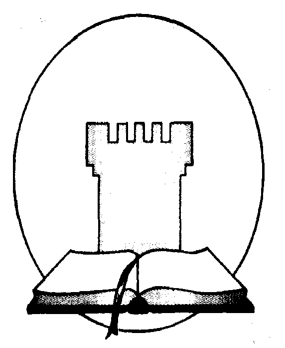
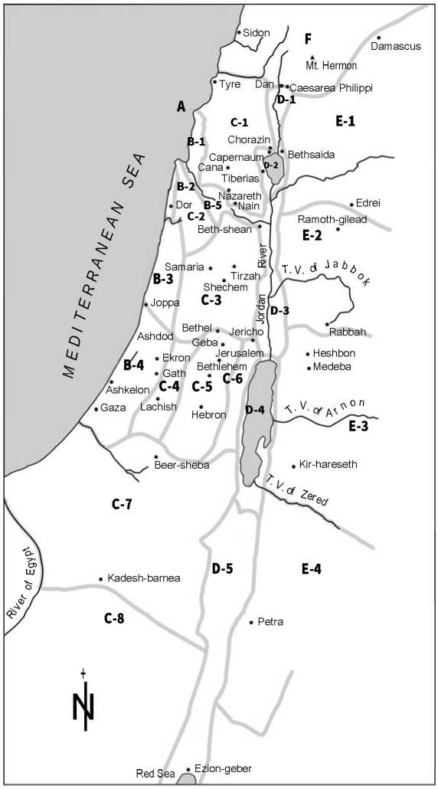

Bible School For
Christian Couples
BSCC
2014
A, B, F, H, M, O, S Units
Final Oral Review
539 B.C.E.
Satan said, in effect, that no man could be put on earth who would maintain integrity to Jehovah if he, Satan, was allowed to put the man to the test. The integrity of all of God’s servants in heaven and on earth was called into question. (Substance is sufficient.)
par. 3]
No, the question is not one of might or of raw strength; it is primarily a moral issue. God’s allowing time to pass permits all creatures with free will the opportunity to demonstrate where they personally stand on these vital matters. (Substance is sufficient.)
To have “the mind of Christ” is to know the pattern of his thinking, to think as he does, to know what he might do in a particular situation, and to imitate his example.
We must regularly fill our minds with the understanding of Jesus’ life and example through a regular study of the Scriptures, particularly the Gospel accounts, along with Bible study aids.
-
7. At Cedar Point, Ohio, in 1919, Brother Rutherford explained that “a Christian’s mission on earth”
is what? [H-2; jv 77]
To proclaim the message of the Lord’s Kingdom.
Jehovah’s Witnesses have experienced improvements in their organizational arrangements throughout the last days. Jehovah is behind these progressive changes.
Satan knows that his time is short, and he is focusing his anger on Jehovah’s servants.
Our willing submission to Jehovah’s sovereignty brings us peace and happiness now and a wonderful hope for the future.
It means to conform to God’s will and to God’s standard of right and wrong in conduct. A person must continually make his mind over so that every facet of his life is in accord with God’s righteousness.
The Memorial
1935
par. 2]
When there is solid evidence that someone in the congregation has committed a serious sin, such as those involving financial or property matters, against you personally, try to resolve the matter between just the two of you without involving anyone else. If the person does not initially admit the wrong and ask forgiveness, it may be good to consider approaching him again later. (Substance is sufficient.)
If you are not able to gain your brother by ‘laying bare his fault between you and him alone,’ then you may take along one or two others and speak with your brother again. Those you take with you should also have the objective of gaining your brother. Preferably, they would be witnesses of the alleged wrongdoing. (Substance is sufficient.)
If you are convinced that your brother has committed a serious sin against you and you have evidence to prove it and the matter has not been resolved after repeated efforts—when you spoke with him alone and when you went to him with one or two others—and you feel that you cannot let it pass, then you should report the matter to the overseers of the congregation.
If upon investigation it becomes evident to the shepherds of the flock that the brother has indeed committed a serious sin against you and yet is unwilling to repent and try to make reasonable and appropriate amends, it may become necessary for the overseers to expel the unrepentant wrongdoer. (Substance is sufficient.)
pars. 3-6; it2 809]
A righteous man fulfills proper obligations and is just, impartial, honest, upright.
The good man shows benevolence, going beyond what justice requires. He shows consideration and a desire to help and benefit others.
Russell withdrew all support from Herald of the Morning because of Barbour’s attitude toward the ransom. (Substance is sufficient.)
This is God’s “administration” that centers on Jesus Christ. Through him, humans are brought into an approved condition before God. A limited number of them have the prospect of being in heaven. A far greater number will live on earth forever.
The key to being a person of godly principle is really to know Jehovah, his likes, his dislikes, and his purposes. We must apply these living principles and allow them to govern our lives.
1131 par. 6]
The Law gave an ideal of the general shape or design of the reality. Jesus put the things foreshadowed by the Law into the realm of actual truth by undeserved kindness.
46 par. 1]
The Governing Body
Matthew 28:19, 20: “Go therefore and make disciples of people of all the nations, baptizing them in the name of the Father and of the Son and of the holy spirit, teaching them to observe all the things I have commanded you. And, look! I am with you all the days until the conclusion of the system of things.”
jv20 pars. 2-3]
First, Jesus preached the truth to others.
Second, Jesus lived in such a way as to fulfill God’s truth, including all the things prophesied about him. He thus confirmed and guaranteed the truth of Jehovah’s prophetic word.
Obtain the person’s name, address, and telephone number. Ask if there is some way that you may continue the conversation at another time. If the person lives in the territory of another congregation, pass the information along to the brothers there. (Substance is sufficient.)
Under the influence of Jehovah’s spirit, Paul played a major part in the conversion of Sergius Paulus. (Acts 13:8-12) Also, from this time onward, it appears that Paul took the lead. Instead of viewing this change as a personal affront, Barnabas likely lived up to the meaning of his name, “Son of Comfort,” and loyally supported Paul throughout the missionary journey.
The secret is love for God and willingness to apply the counsel contained in his Word, the Bible.
After the Flood, mankind started anew with just eight souls.
Matt. 22:37-40; it-2 219, bottom left]
Jesus indicated that this was the second greatest commandment in the Law.
w04 3/15 5 pars. 2-3; w85 2/15 19, box]
Jesus used the unleavened bread and red wine as symbols. The unleavened bread meant, or represented, his sinless body that would be sacrificed. The red wine signified his blood that would be poured out “in behalf of many for forgiveness of sins.”
in what sense do they do this “because of the angels”? [O-15; 1 Cor. 11:3, 5, 10, ftn.; lv211-212]
The angels are interested in seeing that divine authority is recognized throughout Jehovah’s organization, in heaven and on earth. They also benefit from the examples of imperfect humans in this regard. After all, the angels too have to be submissive to Jehovah’s arrangement—a test that more than a few angels failed in times past. Now the angels may see instances when a
Christian woman is more experienced, more knowledgeable, and more intelligent than a baptized male in the congregation; yet, she readily shows her submission to his authority.
1 Corinthians 10:31-33: “Therefore, whether you are eating or drinking or doing anything else, do all things for God’s glory. Keep from becoming causes for stumbling to Jews as well as Greeks and to the congregation of God, even as I am pleasing all people in all things, not seeking my own advantage but that of the many, in order that they might get saved.”
From Pentecost 33 C.E. onward, the faithful apostles of the Lord Jesus Christ took the lead in providing direction for the newly founded Christian congregation. (Acts 4:33, 35, 37; 5:18, 29) By about the year 49 C.E., this governing body had been enlarged to include more than Jesus’ apostles. When the circumcision issue was decided, that body included “the apostles and older men in Jerusalem.” (Acts 15:1, 2) It was their responsibility to consider matters a ffcting Christians everywhere. They sent out letters and decrees, all of which strengthened the congregations and made it possible for the disciples to remain united in thought and action. The congregations followed the direction of the governing body, and as a result, received Jehovah’s blessing and prospered.—Acts 8:1, 14, 15; 15:22-31; 16:4, 5.
Be humble. Show respect. Be a good listener. Be loving.
GOD’S ADMINISTRATION OF AFFAIRS TODAY
Reference(s): w09 10/15 28; w08 3/1 9 par. 4; g90 8/8 5-6; g90 12/22 22 box; rs 152-154; wt 186; it-1 48-49, 991-992, 1228-1229; it-2 1009, 1045; jd 88 par. 12
Note to instructor: This outline is the first in a series designed to help the students to have a better understanding of the reasons for Jehovah’s laws and the loving and wise principles behind them. Appreciating Bible principles and learning to think in those terms will help all to grow in their
relationship with Jehovah and to maintain integrity while walking the Christian way.
Class discussion. Framework questions.
sometimes rendered? [ it-1 48 par. 7]
-
3. According to Ephesians 1:10, what new administration (managerial procedure) did Jehovah put into place?
-
4. What is the objective of God’s administration referred to at Ephesians 1:10? [ w09 10/15 28;
it-1 48-49]
-
a. “the full limit of the appointed times” [ it-1 48 par. 13]
-
b. “gather all things together again in the Christ” [ wt 186 par. 6]
-
c. “the things in the heavens” [ wt 186 par. 7]
-
d. “the things on the earth” [ wt 186 par. 8]
-
6. How do we know that this administration is not God’s Messianic Kingdom? [ w09 10/15 28]
-
7. What role does the Messianic Kingdom government play in accomplishing God’s eternal purpose? [ w08 3/1 9 par. 4]
-
8. Since governments operate by the exercise of authority, what is the difference between governments that have authority officially conferred by the Universal Sovereign and those
whose authority is exercised only by God’s permission? [ it-2 1009, 1045]
-
9. How does the Bible characterize the Gentile governments? Why? [ it-1 991-992]
-
10. Why is it not possible for man to establish a government that brings lasting happiness? [ rs 152-153]
-
11. Since governments are organizational arrangements for making and administering laws, describe the government that Jehovah established with Israel at Mount Sinai. [Isa. 33:22;
it-1 1228-1229]
-
a. How can it be said that the Israelite government was a theocracy?
-
b. In what way was the Law covenant the constitution for this government?
-
c. How did this government prove superior to other governmental arrangements of the
time?
par. 12]
Student Assignment(s)
Outline Cross-References
Instructor Outline is similar to:
SB: A-1
T: A-1
Student Outline is similar to:
T: A-1
GOD’S ADMINISTRATION OF AFFAIRS TODAY
Reference(s): w09 10/15 28; w08 3/1 9 par. 4; g90 8/8 5-6; g90 12/22 22 box; rs 152-154; wt 186; it-1 48-49, 991-992, 1228-1229; it-2 1009, 1045; jd 88 par. 12
Student Assignment(s)
Comments: (1-2 min. per comment) From your seat, be prepared to answer questions from the instructor, explaining the following portions of Ephesians 1:10.
-
a. “the full limit of the appointed times” [ it-1 48 par. 13]
-
b. “gather all things together again in the Christ” [ wt 186 par. 6]
-
c. “the things in the heavens” [ wt 186 par. 7]
-
d. “the things on the earth” [ wt 186 par. 8]
Brother
BIBLE LAW—PART 1
Reference(s): w11 6/15 20-21; w06 11/1521; w02 4/15 14-15; w97 8/1 30-31;
pars. 1-4; it-2211-213, 222; lv115; od 136
Class discussion. Framework questions.
As used in the Bible, what does the term “law” mean for God’s servants? [
As the Supreme Lawgiver, Jehovah controls how large a field of activity? [ pars. 6-10; it2 211 pars. 10-12]
What are sanctions? What can we discern from the sanction imposed upon Cain? [ par. 7; it-2 222 pars. 5-7]
Are angels subject to law? Explain and discuss.
Explain what is meant by “law of divine creation.” [
What is referred to by the “law to Adam”? [
What would be included in the term “laws to Noah”? [
According to the footnote (*) at Hebrews 7:4, what is meant by “patriarch”? Why can Jehovah be designated as the Great Family Head? [Eph. 3:14, 15; it-2 212 par. 3]
What is included in patriarchal law? How were patriarchal laws reflected in laws of other nations, and why? [ it-2 212 pars. 3-4]
According to patriarchal law, how were the Israelites, in effect, sold into slavery for nothing? How were they legally released? [ it-2 212 par. 5]
How were marriages and birthrights viewed under patriarchal
What lesson can be learned from Abraham’s efforts to find a suitable wife for Isaac? [Gen. 3,4; lv 115 par. 12]
How did patriarchal law contribute to a high moral standard? [ it-2 213 par. 1]
How can we uphold the same high standards of our great Family Head today? [Eph. w06 11/15 21 pars. 1-4; od136par. 2]
Comment: (2-3 min.) What legal responsibilities were associated with custodial times, and why? [ it-2 213 pars. 2-3]
What can be learned from the way that the patriarch Abraham and the prophet Jeremiah purchased property? [Gen. 23:17, 18; Jer. 32:9-12; w97 8/1 30-31; it-1 608 pars.
What principle might be gleaned for shepherds of the flock of God today? [Acts 20:28;
1 Pet. 5:1, 2; w11 6/15 20-21]
Instructor Outline is similar to:
SB: A-2 (I)
T: A-2 (I)
Student Outline is similar to:
SB: A-2 (S)
T: A-2 (S)
BIBLE LAW—PART 1
Reference(s): w11 6/15 20-21; w06 11/15 21; w02 4/15 14-15; w97 8/1 30-31; it-1 548-549, 608
pars. 1-4; it-2 211-213, 222; lv115; od 136
Student Assignment(s)
Comment: (2-3 min.) From your seat, explain what legal responsibilities were associated with custodial care in Bible times and why. [it-2 213 pars. 2-3]
Brother
BIBLE LAW—LAW BASED ON LOVE
Reference(s): w05 10/1 12-13; w02 4/15 15-16 pars. 11-14; w75 212 pars. 21-22; it-1 549; it-2 213, 220-222, 1085-1087; jd 79-81 pars. 19-22
Introduction: Obedience to divine laws is not popular today. For many, deferring to an invisible higher authority seems pointless. We live in an era of blurred boundaries between right and wrong and of huge so-called gray areas, resulting in moral decay. Since so many today are second-guessing the value of Jehovah’s laws, we need to fortify our conviction that all divine standards are for our benefit. In the discussion that follows, we will note that the fundamental regulations in Jehovah’s Word reveal that his laws are much more than just a list of cold, legalistic statutes. They form the basis for a balanced, productive life with all aspects of conduct being affected for good. In brief, all forms of divine law are edifying, ethical, and instructive.
Class discussion. Framework questions.
-
1. What is meant by the expression “law of conscience”? Give examples of how the conscience functions. Why is a person’s conscience not always a dependable guide? How is the conscience affected by law? [ w75 212 pars. 21-22; it-2 220 par. 6-221 par. 1]
-
2. Explain Romans 2:14, 15. [w05 10/1 12; it-2 220 par. 6-221 par. 1]
-
3. Demonstration: (5-6 min.) On a Bible study, a sister helps her advanced student, who is showing appreciation for what she is learning, to see that it is not always safe simply to do what we feel is right when making important decisions in life. In particular, the sister highlights how the “law of conscience” can help her student to overcome bad habits and grow in her relationship with Jehovah. [w05 10/1 13 pars. 1-4; it-2 220 par. 6-221 par. 1]
-
4. Comments: (1-2 min. per comment) Explain and illustrate what the following expressions mean.
-
5. Describe the inauguration of the “Law of God to Israel,” also known as “the Law of Moses.” [Ex. 19:3-9, 16-19; 20:18-21; it-2 213 par. 6]
-
6. What various meanings does the word “law” have in the Bible? [ it-2 213 par. 7]
-
7. Since Jehovah was identified in the Law as both God and King, disobedience to the Law was
considered to be what? [ it-1 549 par. 3; it-2 213 par. 8]
priests and a holy nation”? [ it-2 213 par. 9]
of Moses. [ it-2 220 par. 1]
-
10. Describe what is meant by “the Ten Words.” [Ex. 34:28; it-2 1085-1087]
-
11. What relationship was there between “the Ten Words” and the rest of the almost 600 other laws? How was the tenth commandment in the Law unique in comparison with the laws of all other nations? [ it-2 220 par. 4]
-
12. Under the Law of Moses, what latitude in judgment were the judges given? Illustrate. [ it-2 220
par. 5]
-
13. How can elders show that they know Jehovah and his justice when dealing with God’s people today? [ jd 79-81 pars. 19-22]
-
14. According to Psalm 119:18 and Isaiah 48:17, 18, why is it vital to cultivate a deep desire to
understand and yield to Jehovah’s laws and principles? [ w02 4/15 15 par. 11-16 par. 14]
Student Assignment(s)
Outline Cross-References
Instructor Outline is similar to:
SB: A-3
T: A-3
Student Outline is similar to:
SB: A-3
T: A-3
BIBLE LAW—LAW BASED ON LOVE
Reference(s): w05 10/1 12-13; w02 4/15 15-16 pars. 11-14; w75 212 pars. 21-22; it-1 549; it-2 213, 220-222, 1085-1087; jd 79-81 pars. 19-22
Student Assignment(s)
Demonstration: (5-6 min.) On a Bible study, a sister helps her advanced student, who is showing appreciation for what she is learning, to see that it is not always safe simply to do what we feel is
right when making important decisions in life. In particular, the sister highlights how the “law of conscience” can help her student to overcome bad habits and grow in her relationship with Jehovah.
[w05 10/1 13 pars. 1-4; it-2 220 par. 6-221 par. 1]
Sister
Bible student
Comments: (1-2 min. per comment) From your seat, briefly explain and illustrate what is meant by the following expressions.
|
a. |
“Law of the Christ” [ it-2 221 |
1 pars |
■ 2-5] |
Sister |
|
b. |
“Law of God” [ it-2 221 par. |
6] | |
Sister |
|
c.
d. |
“Law of Sin and Death” [ it-2 221
“Law of Faith” [ it-2 221 par. 8] |
par. 7] |
Brother
Brother |
|
e.
f. |
“Law of Husband” [ it-2 221
“Kingly Law” [ it-2 222 par. |
par.
4] |
9-222 par. 3] |
Brother
Brother |
BIBLE LAW—MOSAIC LAW, A SHADOW AND A TUTOR
Reference(s): w06 6/15 20-23; w89 11/15 5 par. 4-6 par. 4; w89 12/1 16 par. 6; g78 6/22 27-28;
it-1 962-963; it-2 213, 220-221, 905, 1131-1133; rs 345-348
Class discussion. Framework questions.
what did it demonstrate to the Jews?
1. Since the Mosaic Law is part of the inspired Scriptures, To the world of mankind? [ it-2 213, 220 par. 1]
How do we know that the Mosaic Law was never meant to be binding on all
[Ex. 31:12, 13; Ps. 147:19, 20; rs 345 par.
What indication did Jehovah give to Israel Commandments and the weekly Sabbath, it-2 221 par. 2; rs 348 pars. 2-3]
Explain why the Ten Commandments, Christians today? [ w89 11/15 5 par.
that someday the Law covenant,
basic part of the Law, par. 4]
par. 6]
-
6. How did the Mosaic Law serve as “a typical representation” and “a shadow of the good things to come”? [Heb. 8:4, 5; 9:23; 10:1; it-2 220 par. 2]
-
7. What realities do the following legal shadows indicate?
-
a. Exodus 12:49 [John 10:16; Gal. 3:28; w89 12/1 16 par. 6]
-
b. Leviticus 19:9, 10 [ w06 6/15 20 par. 11-23 par. 15; it-1 963 par. 2]
1131 par. 6]
-
9. What purpose did the Law serve? [Gal. 3:19,24; it-2 220 box]
-
10. Is the Mosaic Law of no benefit for us today? How is it ‘handled lawfully’? [1 Tim. 1:5-8;
g78 6/22 27-28]
pars. 1-2]
Student Assignment(s)
Outline Cross-References
Instructor Outline is similar to:
Student Outline is similar to:
SB: A-4 (S)
T: A-4 (S)
BIBLE LAW—MOSAIC LAW, A SHADOW AND A TUTOR
Reference(s): w06 6/15 20-23; w89 11/15 5 par. 4-6 par. 4; w89 12/1 16 par. 6; g78 6/22 27-28;
it-1 962-963; it-2 213, 220-221, 905, 1131-1133; rs 345-348
Student Assignment(s):
Discussion: (5 min.) During family worship, a husband and wife discuss how “the spirit of the truth” was helpful in the first century and how it is of help today. [John 16:12, 13; it-2 1132 pars. 1-2]
Husband
Wife
BIBLE LAW—LAW BASED ON PRINCIPLES
Reference(s): w11 3/1 12 par. 4; w117/15 12 pars. 9-10; w07 10/1 5 pars. 1-3; w05 5/15 19 par. 6; w03 12/1 20-23; w02 2/15 4-7; w02 4/15 18-22; w97 10/15 28-30; w95 6/15 18-23; w61 559
par. 20; g98 8/8 20 par. 4-21 par. 2; lv77 par. 7; 105; lp174 pars. 14-15
Introduction: Previously in this series, we have considered how Jehovah has arranged for
“an administration” for the purpose of unifying his loyal subjects. We also considered why he has the right to establish laws for his subjects and how he has done so in the past. We have seen that the
Law was both “a shadow” and “a tutor” with a very specific objective. But before we consider
specific elements of that Law, it would be to our benefit to lay a foundation for appreciating the principles behind those laws. We will learn what the Law teaches us about Jehovah’s thinking on
matters and why the principles behind the laws are important to our maintaining a good relationship with him and others.
Class discussion. Framework questions.
pars. 4-6]
pars. 1-2]
-
3. Why is our discerning and applying Bible principles not as easy as following a set of laws? [w02 4/15 20 par. 9]
-
4. According to Ephesians 5:17 and Hebrews 5:14, what is needed in order to grow as mature Christians? How is this developed? Why is this pleasing to Jehovah? [ w113/1 12 par. 4; w03
12/1 21 par. 3; w95 6/15 19-21 pars. 6-12]
c. Joseph [Gen. 39:9; w97 10/15 29 par. 3; lv105 pars. 18-20]
How did King David, who lived after the Law was established, the principles behind it? [2 Sam. 23:13-17; w05 5/15 19 par.
demonstrate that he appreciated 6; w61 559 par. 20; lv77 par. 7]
7. What can we learn from Jesus’ the key principles of the Bible fall
words at Matthew 22:34-40? [READ] Thus, according to Jesus, into what two categories? [ w02 2/15 4 par. 4-5 par. 1]
-
a. Using Daniel as an example, explain how the proper application of Bible principles can safeguard our relationship with Jehovah. What is the lesson for us today? [Dan. 2:28, 30; w02 2/15 5 pars. 3-8]
-
b. Using Gideon as an example, explain how Bible principles can safeguard our relationship with others. What is the lesson for us today? [Judg. 6:12-16; 8:1-3; w02 2/15 6-7 pars. 2-4]
-
9. Give some examples of how Jesus in his Sermon on the Mount taught the people to think in terms of principles. [Matt. 5:17-48; 7:12; w07 10/1 5 pars. 1-3; w02 4/15 21-22 pars. 13-14]
-
10. What is the key to being a person of godly principle? [ w97 10/15 29 par. 2]
-
11. Why is it a protection to have a firm grasp of basic Bible principles? [ w02 4/15 20 par. 8]
-
12. How does our living in harmony with Bible principles reveal the motives of our heart? [ w02
4/15 20 par. 10]
-
13. What is a key to being guided by godly principles? [Ps. 97:10; Prov. 6:16-19; w02 4/15 21 par. 12]
-
14. Comments: (2-3 min. per comment) How would you reason with someone on the basis of Bible principles in the following areas of a Christian’s life?
g98 8/8 20 par. 4-21 par. 2]
Conclusion: With this foundation now in place, we will begin considering specific aspects of the Law as given to the nation of Israel through Moses. Your goal will be to grasp the Personality behind the Law, to become more attuned to Jehovah as a Person. Ask yourselves these questions: What does this information teach me about Jehovah and his qualities? How can I manifest Jehovah’s qualities in
my dealings with others? What are the principles behind the laws, and how can I teach them to others?
Student Assignment(s)
Outline Cross-References
Instructor Outline is similar to:
T: A-5
Student Outline is similar to:
T: A-5
BIBLE LAW—LAW BASED ON PRINCIPLES
Reference(s): w11 3/1 12 par. 4; w117/15 12 pars. 9-10; w07 10/1 5 pars. 1-3; w05 5/15 19 par. 6; w03 12/1 20-23; w02 2/15 4-7; w02 4/15 18-22; w97 10/15 28-30; w95 6/15 18-23; w61 559
par. 20; g98 8/8 20 par. 4-21 par. 2; lv77 par. 7; 105; lp 174 pars. 14-15
Student Assignment(s)
Reports from speaker’s stand: (3-4 min. per report)
-
a. Using Daniel as an example, explain how the proper application of Bible principles can safeguard our relationship with Jehovah. What is the lesson for us today? [Dan. 2:28, 30; w02 2/15 5 pars. 3-8]
Brother
Brother
Comments from your seat: (2-3 min. per comment) How would you reason with someone on the basis of Bible principles in the following areas of a Christian’s life?
Sister
g98 8/8 20 par. 4-21 par. 2]
Brother
BIBLE LAW—LAWS AND PRINCIPLES AS RELATED TO WORSHIP
Reference(s): w10 6/15 25-29; w07 3/1 27-28; w01 1/15 13-14; w00 3/15 15-20; w00 8/15 14-16; w99 11/15 18-23; w83 9/1 17 pars. 4-5; w69 551; it-1 338 par. 4; 339 par. 2; 1229 par. 1; it-2 214, 525-528, 687, 831-832; 1008-1009; 1110
Note to instructor: Whenever it is appropriate for you to do so, draw the attention of the class to the principle(s) behind the feature of the Law covenant under consideration and how these principles might apply today. Remember that the objective is for you to train the students to think in terms of Bible principles and for them to become better acquainted with Jehovah and his way of thinking.
Class discussion. Framework questions.
Theocratic Government [ it-2 214]
-
1. What is meant by the statement “Jehovah God is the Supreme Sovereign”? What is involved? [Deut. 10:17; it-2 1008]
-
2. To whom did God delegate authority, and on what basis? [ w83 9/1 17 pars. 4-5; it-2
1008-1009]
w01 1/15 13-14 pars. 9-11]
Religious Obligations [ it-2 214]
w99 11/15 18-23]
a person take up God’s name in a worthless way today? [Deut. 5:11; w69 551; it-1 338 par. 4;
339 par. 2]
it-2 831 par. 2-832 par. 1]
[Heb. 8:3-5; 10:5-10; it-2 525 par. 6-528 par. 7; w00 8/15 14-16 pars. 11-18]
-
9. Demonstration: (5 min.) A sister explains to her Bible student how one of the offerings (sister to select one) under the Law applies in principle to Christians. [ it-2 214]
-
10. What were some practices of false religion in Israel’s day, and why were God’s people forbidden to practice these? Reasoning on these principles can protect us from what commonly accepted practices today? [ it-2 214]
Duties of Priesthood [ it-2 214]
Membership in the Congregation of Israel [ it-2 214]
modern application. [ it-2 214]
Note to instructor: Remind the class that in preparation for the next unit in this series,
make a concentrated effort to identify the Bible
that will be discussed.
Student Assignment(s)
principles behind the various features of the Law
Outline Cross-References
Instructor Outline is similar to:
SB: A-5
T: A-5
Student Outline is similar to:
SB: A-5
T: A-5
BIBLE LAW—LAWS AND PRINCIPLES AS RELATED TO WORSHIP
Reference(s): w10 6/15 25-29; w07 3/1 27-28; w01 1/15 13-14; w00 3/15 15-20; w00 8/15 14-16; w99 11/15 18-23; w83 9/1 17 pars. 4-5; w69 551; it-1 338 par. 4; 339 par. 2; 1229 par. 1; it-2 214, 525-528, 687, 831-832; 1008-1009; 1110
Student Assignment(s)
Demonstration: (5 min.) A sister explains to her Bible student how one of the offerings (sister to select one) under the Law applies in principle to Christians. [ it-2 214]
Sister
Bible student
Report: (5 min.) From speaker’s stand, review some of the duties of the priesthood in Israel, and explain how these apply to the Christian priesthood. [ it-2 214, 687]
Brother
|
A Units 2-6 |
Score |
|
Written Review
Answer Sheet |
Total: 11 | |
-
a. The “Law of Conscience” [A-3; it-2 220 par. 6-221 par. 1]
-
b. The “Law of the Christ” [A-3; it-2 221 pars. 2-5]
-
c. The “Kingly Law” [A-3; it-2 222 par. 4]
-
d. The “Law of Faith” [A-3; it-2 221 par. 8]
Love your neighbor as yourself.
Having ‘the law written in their hearts.’
Law of faith that belongs to freedom, based on the new covenant.
The law contrasted with “that of works.”
Mark the following statements true or false: True False
-
2. The Ten Commandments are commonly called the Ten Words. [A-3; Ex. 34:28; it-2 1085-1087] [1]
-
3. The Mosaic Law was originally meant to be binding on all mankind. [A-4; Ex. 31:12, 13;
Ps. 147:19, 20; rs 345 par. 2-346 par. 1] [1]
par. 11] [1]
The key to being a person of godly principle is really to know Jehovah, his likes, his dislikes, and his purposes. When these fundamentals about God govern our lives, they become, in effect, living principles.
par. 6] [1]
The Law gave an idea of the general shape or design of the reality. Jesus put the things foreshadowed by the Law into the realm of actual truth.
Christian congregation members must manifest the truth in their lives. They have to be consistent and undeviating in right conduct.
|
A Units 2-6 |
Score |
|
Written Review
Student Name |
Total: 11 | |
Love your neighbor as yourself.
Having ‘the law written in their hearts.’
Law of faith that belongs to freedom, based on the new covenant.
The law contrasted with “that of works.”
Mark the following statements true or false: True False
-
2. The Ten Commandments are commonly called the Ten Words. [1]
-
3. The Mosaic Law was originally meant to be binding on all mankind. [1]
-
4. Jehovah is “the Supreme Sovereign” by reason of his Creatorship. [1]
-
5. The angels are not subject to laws. [1]
-
6. What is the key to being a person of godly principle? [1]
7. Explain what is meant by “shadow” and “reality” at Colossians 2:16, 17. [1]
8. Since the Christian congregation serves as “a pillar and support of the truth,” what responsibility is placed on each member in the congregation? [1]
BIBLE LAW—LAWS, PRINCIPLES, AND OUR INTERACTION WITH OTHERS
Reference(s): w11 8/1 6-7; w07 5/15 16 par. 1; w04 7/15 26-27; w02 2/1 29; w95 11/15 11-14, 17-18; w92 7/1 12-13; w89 11/1 18-21 pars. 2,11-13; w75 116 par. 13; w64 639; ilt-1 292 pars. 1-3; 435; 471-472; it-2 214-217, 245, 1052 par. 3; jr 138-139 pars. 19-21; lv 219-221
Note to instructor: Whenever it is appropriate for you to do so, draw the attention of the class to the principle(s) behind the feature of the Law covenant under consideration and how these principles might apply today. Remember that the objective is for you to train the students to think in terms of Bible principles and for them to become better acquainted with Jehovah and his way of thinking.
Class discussion. Framework questions.
Introduction: The laws governing legal cases for the nation of Israel highlighted Jehovah’s justice and mercy. Judges were given latitude to show mercy, depending on the circumstances. These laws also kept the nation uncontaminated and protected the welfare of each individual Israelite. As we
consider the judicial system that was in place, try to identify the principles behind these laws.
Judicial System [ it-2 214-215]
of men to take the lead in the first-century congregation? [Ex. 18:25, 26; Deut. 16:18; 1 Ki. 3:
9-12; 1 Tim. 5:20, 21; Titus 1:9; w92 7/1 12 pars. 13-15; it-2 215]
-
2. What was the procedure for hearing legal cases in ancient Israel? What principles in these procedures can be of benefit to elders today? [Ex. 18:21, 22; Deut. 25:1, 2; 2 Chron. 19:4-10; it-2 215]
-
3. Report: (5 min.) How were the more difficult cases handled? Give an example. What
precedents, or patterns, in the Law can be applied to the Christian congregation today? [Ex. 18:25, 26; 1 Ki. 3:16, 28; 1 Cor. 5:1-5; 6:2-6; w92 7/1 13 pars. 16-19; it-2 215]
consideration in matters of judgment today. [Deut. 17:6; 19:15; John 8:17; 1 Tim. 5:19; it-2 215]
principle found at 1 John 4:20, 21 show that God’s view of malicious lying has not changed?
[Deut. 19:16-19; it-2 215; 245 par. 4]
-
6. What principles drawn from Deuteronomy 17:5-7 and 19:18-20 can be applied within the congregation today? [ w64 639]
-
7. What were judges to avoid so as to prevent a perverting of justice? Explain how elders can uphold Jehovah’s justice today. [Ex. 23:1, 2, 6-8; Lev. 19:15, 35; Jas. 2:13; it-2 215]
-
8. What were some forms of punishment under the Law covenant? How does the way matters are handled within the Christian congregation show that elders are given some latitude in dealing with wrongdoers today? [ it-2 215; 1052 par. 3; jr 138-139 pars. 19-21]
-
9. Talk: (5 min.) What is the antitypical city of refuge, and how does it compare with its ancient counterpart? [ w95 11/15 11-14, 17-18; it-1 471-472]
Marriage, Family Relationships, Sexual Morality [it-2 215-216]
-
10. How did Jehovah perform the first marriage? [Gen. 2:18,21-24; w89 11/1 18 par. 2]
-
11. Explain the wisdom in God’s forbidding Israelites to marry aliens. How does the Christian view
of courtship and marriage parallel these prohibitions? [Ex. 34:12-16; Deut. 7:1-4; 1 Cor. 7:39; 2 Cor. 6:14; w89 11/1 20-21 pars. 11-13]
-
12. Under what circumstances was divorce allowed? not allowed? What similar principles are in place today? [Deut. 22:28, 29; 24:1-4; it-2 215; lv 219-221]
-
13. How serious was the committing of adultery? [Deut. 22:22; it-2 215]
-
14. What was considered incest under the Law, and how is understanding this principle helpful to Christians? [ w02 2/1 29; it-2 216]
-
15. What duties did God’s law impose on parents (especially fathers)? on children? What could result from a child’s willful disobedience? How would you reason with someone that this was not an example of extreme cruelty toward children? [Ex. 20:12; Deut. 5:16; 6:6-9, 20-25; 21:18-21; w75 116 par. 13; it-1 435 par. 4; it-2 216]
-
16. In Christian households today, what important parallel responsibility rests upon parents and children? [Eph. 6:1-4; w11 8/1 6-7; w07 5/15 16 par. 1]
-
17. What were the sanctions for bestiality? for sodomy? What viewpoint should we have concerning such unclean practices today? [Ex. 22:19; Lev. 18:22, 23, 29; 20:13, 15, 16; it-1 292 pars. 1-3; it-2 216]
Business Practices [ it-2 216-217]
-
18. What do we learn from the Jubilee year, and what did it foreshadow? [Lev. 25:15, 16,23-28; w04 7/15 26-27; it-2 216]
-
19. Comments: (2 min. per comment) Explain how the underlying principles in the following can help a Christian who is in business today.
-
a. The law of inheritance [Num. 27:6-11; Deut. 21:15-17; it-2 217]
-
b. Jehovah’s view of honesty and accuracy [Lev. 19:35, 36; Deut. 25:13-15; it-2 217]
-
c. How debts were to be handled, including restrictions that were placed on obtaining security for loans [Deut. 15:1-3; 24:6, 10-13; it-2 217]
Note to instructor: Remind the class that in preparation for the next unit in this series, they should
make a concentrated effort to identify the Bible principles behind the various features of the Law that will be discussed.
Student Assignment(s)
Outline Cross-References
Instructor Outline is similar to:
SB: A-6
T: A-6
Student Outline is similar to:
SB: A-6
T: A-6
BIBLE LAW—LAWS, PRINCIPLES, AND OUR INTERACTION WITH OTHERS
Reference(s): w11 8/1 6-7; w07 5/15 16 par. 1; w04 7/15 26-27; w02 2/1 29; w95 11/15 11-14, 17-18; w92 7/1 12-13; w89 11/1 18-21 pars. 2,11-13; it-1 292 pars. 1-3; 471-472; it-2 214-217, 245,
1052 par. 3; jr 138-139 pars. 19-21; lv 219-221
Student Assignment(s)
Report: (5 min.) From speaker’s stand, show how the principles found in the Law regarding judicial matters find parallels in the Christian congregation. [w92 7/1 13 pars. 16-19; it-2 215, down to and including “Bribery”]
Brother
Talk: (5 min.) From speaker’s stand, explain details regarding the antitypical city of refuge and how it compares with its ancient counterpart. [w95 11/15 11-14, 17-18; it-1 471-472]
Brother
Comments: (2 min. per comment) From your seat, explain how the underlying principles in the following can help a Christian who is in business today.
Sister
Sister
Brother
BIBLE LAW—LAW HIGHLIGHTS JEHOVAH’S HOLINESS
Reference(s): w10 6/15 13-14; w04 6/15 14-15; w89 6/1 16-20; w86 9/1 18 par. 7; w70 378; it-1 54, 174,479-481, 838; it-2 217-218, 1048-1049, 1166-1167, 1169-1170; rs271; jd 121
Note to instructor: Whenever it is appropriate for you to do so, draw the attention of the class to the principle(s) behind each feature of the Law covenant under consideration and how these principles might apply today. Remember that the objective is for you to train the students to think in terms of Bible principles and for them to become better acquainted with Jehovah and his way of thinking.
Class discussion. Framework questions.
Introduction: Jehovah’s laws governing military action taken by the nation of Israel forbade selfish
aggression and highlighted God’s justice and mercy. Also, dietary laws protected the welfare of each individual Israelite and kept the nation uncontaminated, both physically and spiritually. As we consider the military and dietary laws that were in place, endeavor to identify the principles behind these laws.
Military Laws
-
1. Why did Jehovah permit, and even command, Israel to engage in military campaigns? [Lev. 18:24, 25; Deut. 7:1, 2, 5; 9:5; rs 271; w86 9/1 18 par. 7]
w86 9/1 18 par. 7]
-
2. Who were used as soldiers in Israel’s army? [Num. 1:2, 3,44-46; 26:1-4; it-2 1167 par. 2]
-
3. Who were exempt from military service? [Num. 1:47-49; Deut. 20:5-8; it-2 1167 par. 2]
par. 3]
-
a. How does the principle of sanctification apply to Jehovah’s use of pagan nations? [Isa. 13:1-3; Jer. 22:6-9; it-2 1166 par. 7]
-
b. What wrong conclusion did enemy nations often draw from the victories given to them by Jehovah? [Deut. 32:27; it-1 54 par. 7]
it-2 1167 par. 3]
Dietary and Sanitary Laws
-
8. In what important ways did the dietary and sanitary laws serve for the good of the Israelites? [Lev. 19:2; it-2 217-218] While we are not under strict dietary laws, how does an understanding of them help Christians today? [Rom. 14:1-3; 1 Cor. 8:4-13; 10:25-33]
-
9. State the circumstances that prevailed when God issued his command prohibiting the misuse of blood. Why is God’s command of importance to us today? [Gen. 9:3-6; Acts 15:28, 29; w04 6/15 14-15 pars. 5-6]
-
10. Comment: (2 min.) How does viewing life as sacred affect our choice of entertainment and sports? [ jd 121 par. 19]
-
11. How do the laws prohibiting pork and certain fish as food reflect God’s loving concern for the welfare of his people? [ it-1 838 par. 7; it-2 1048 par. 8-1049 par. 1]
-
12. What underlying principles can we discern from examining the sanitary laws God imposed? [Lev. 12:2-5; 15:16-24; it-1 479 par. 1-480 par. 1]
Note to instructor: The following questions are taken from The Watchtower of June 1, 1989, pages 16-20. You may select the questions that you feel will be most helpful to the students for discussion as time allows.
-
13. Give some additional examples from the book of Leviticus, showing that personal as well as collective hygiene was required in Israel. What was the purpose of such laws?
-
14. What is true of Jehovah’s Witnesses as a people, but what have some traveling overseers reported?
-
15. What counsel is given to all new members of the Bethel family? What principles followed in Bethel homes should govern every Christian household?
-
16. Why is an elaborate bathroom not necessary in order to keep ourselves and our children clean? What laws in Israel were conducive to good health, and what lesson can Jehovah’s people today learn from this?
-
17. What should be true of even the most humble Christian home?
-
18. What counsel is given concerning vehicles used in Jehovah’s service, and why need this not be very time-consuming? What spiritual reason is there for keeping physically clean and for having tidy homes and vehicles?
-
19. What laws governed ceremonial cleanness in Israel, and what do these laws indicate?
-
20. Why are animal sacrifices no longer necessary, but what questions are raised?
-
21. How has the prophecy at Malachi 3:3,4 been fulfilled upon anointed Christians since 1918, and
what acceptable sacrifices can they offer to Jehovah?
physically, mentally, morally, and spiritually clean?
our concern regarding personal cleanliness, clothing, and footwear?
-
24. What spiritual benefits result from our clean and neat appearance as Christian ministers?
-
25. What further good fruitage comes from our being clean in mind and body?
-
26. How do these discussions help us appreciate the truthfulness of Psalm 19:7-9?
Student Assignment(s)
BIBLE LAW—LAW HIGHLIGHTS JEHOVAH’S HOLINESS Reference(s): w10 6/15 13-14; w04 6/15 14-15; w89 6/1 16-20; w86 9/1 18 par. 7; w70 378; it-1 54, 174,479-481, 838; it-2 217-218, 1048-1049, 1166-1167, 1169-1170; rs271; jd 121
Student Assignment(s)
Report: (4 min.) From speaker’s stand, explain how the Israelites showed that they were sanctified for the wars of Jehovah. [Deut. 23:9-14; Josh. 3:5; it-2 1166 par. 6; 1167 par. 3]
Brother
Comment: (2 min.) From your seat, explain how viewing life as sacred affects our choice of entertainment and sports. [ jd 121 par. 19]
Sister
BIBLE LAW—THINK IN TERMS OF BIBLE PRINCIPLES
Reference(s): w02 2/15 14-15; w01 10/1 15-18; w93 9/1 25-26; w88 7/15 21-22; w86 6/1 29; w82 3/1 19 par. 12-20 par. 17; w78 10/15 9-12; w77 191-192; it-2 219-220, 724; bh 128 par. 9
Class discussion. Framework questions.
Other Obligations Involving Fellow Creatures
Matt. 22:37-40; it-2 219, bottom left]
-
a. refrain from taking vengeance or holding a grudge [Lev. 19:18]
-
b. care for the poor [Ex. 23:6; Lev. 25:35, 39-43]
-
c. care for widows and orphans [Ex. 22:22-24; Deut. 24:17-21; 27:19]
-
d. respect the property of others [Ex. 20:17]
-
e. have consideration for the disabled [Lev. 19:14]
-
f. deal fairly with alien residents [Ex. 22:21; 23:9; Deut. 10:17-19]
-
g. observe the rights of slaves and not mistreat them [Ex. 21:2; Deut. 15:13-15]
bottom right; 220, upper left]
come to mind for a Christian? ( Note to instructor: Discuss as time permits.) [ bh 128 par. 9]
par. 12-20 par. 17]
not the goal. References cited below are provided to the instructor only so that he may assist in guiding the students as may be necessary.
Situation: A brother feels that some cherished privilege of service has been unjustly removed.
Question: What Bible principles might he reflect on to keep from developing a bitter spirit? [1 Pet. 5:6; w86 6/1 29 pars. 3-4]
How could reflecting on the example of Mephibosheth also help? [2 Sam. 16:1-4;
19:24-30; w02 2/15 14-15 pars. 11-12]
Situation: A pioneer sister complains that a fellow pioneer sister is always taking her return visits. The pioneer sister who is accused of stealing return visits brags about her success in the ministry, and now she has been asked to relate her experiences on the circuit assembly.
Question: What Bible principles do you feel would guide you in handling this matter? [2 Sam. 12:28; it-2 724 par. 3]
Situation: An older sister has serious health problems. The elders want to help, but the treatments are expensive and the problem is not going away.
Question: What Bible principles would they likely consider in dealing with this matter?
[Mark 14:3-7; w93 9/1 25-26 pars. 14-15; w88 7/15 21-22]
Situation: A sister’s unbelieving husband strongly objects to her taking the children to the meetings or in the ministry.
Question: What Bible principles should guide her in dealing with the matter? [Acts 5:29;
1 Cor. 7:10-16; 1 Pet. 3:1-6]
Situation: An appointed brother owns a company and is considering employing illegal aliens.
Question: What Bible principles would be helpful to him in making his decision? [Acts 5: 29; Rom. 13:1; w77 191-192]
Situation: A couple have an inactive, baptized adult child who is no longer living in their home but is living a life contrary to Bible principles. Although action is warranted, he has not been dealt with by the congregation.
Question: What Bible principles would the couple want to consider with regard to their association with him? [1 Cor. 15:33; w01 10/1 15-18; w78 10/15 9-12]
[Read and apply Ecclesiastes 12:13, 14 and Galatians 6:5.]
[Ps. 32:8]
Student Assignment(s)
Outline Cross-References
Instructor Outline is similar to:
SB: A-9
T: A-8
Student Outline is similar to:
SB: A-9
T: A-8
A Units 7-9, M Units 1-2
Oral Review
it-1 435 4; it-2 216]
Parents (especially fathers) were commanded to teach their children God’s law.
Children were commanded to honor their parents.
The son was brought before the older men of the city, and after testimony from the parents that he was an irreformable offender, the delinquent suffered capital punishment by stoning.
In writing to fellow Christians, the apostle Paul indicated that fathers, in particular, were to “go on bringing [their children] up in the discipline and mental-regulating of Jehovah.”
After the Flood, mankind started anew with just eight souls.
Jesus indicated that this was the second greatest commandment in the Law.
bottom right; 220, upper left]
If someone came upon a domestic animal in distress, he was obligated to help it, even if it belonged to an enemy of his. [Ex. 23:4, 5; Deut. 22:4]
Beasts of burden were not to be overworked or mistreated. [Deut. 22:10; compare Proverbs 12:10.]
A bull was not to be muzzled when threshing; it could then feed on the grain it was threshing. [Deut. 25:4; compare 1 Corinthians 9:7-10.]
A person was not to take both a mother bird and her eggs, thereby wiping out a family.
[Deut. 22:6, 7]
A person was not to slaughter a bull and its young or a sheep and its young on the same day. [Lev. 22:28]
Prov. 3:5-7; Jas. 1:5; be27 par. 4-28 par. 2]
Prayer enables us to approach the study of God’s Word with the proper attitude. We want our heart, our inmost self, to be receptive to the instruction that Jehovah gives us.
You may encounter points that you do not readily understand or that you would like to explore_________
more thoroughly. Instead of letting them sidetrack you,_______make a note to give these further
consideration later. Points are often clarified as you make your way through the material. If not,________
you can do additional research.
Discernment is the mental ability to look beyond the obvious. It could well be said that effective family worship requires an understanding of the family itself. Careful observation will reveal what a family head needs to do in order to establish and build up spiritual qualities in each family member.
BIBLE GEOGRAPHY—THE GOOD LAND
Reference(s): g7410/8 19 pars. 1-2; it-1 403 par. 3; it-2 569 par. 1; re 251-252; si 270-278; gl 2-3, 5, 12-13, 16, 18-19, 28-29
Note to instructor: Help the students to appreciate that knowledge of the geography of the Promised Land builds our faith in the Bible. It helps to broaden our understanding of the Scriptures and confirms God’s Word as truth. The Bible refers to the land; in turn, the land supports the truth of the Bible. This discussion of the good land will help us to visualize places and events that serve as a foundation of our faith.
Class discussion. Framework questions.
-
1. Using the “See the Good Land” brochure on pages 2 and 3, locate on the map six world powers that had dealings with God’s people, and list them in their order of appearance. [Rev. 17:10; re 251 par. 2; 252 pictures]
-
2. What do you observe about the locations and sizes of these powers in comparison to the Promised Land? Why should this be of interest to us? [Deut. 7:7, 8; 2 Ki. 13:23; g7410/8 19
pars. 1-2; it-1 403 par. 3]
-
3. Report: (5 min.) Present some information as to the size of “the land.” What were the boundaries of the ancient Promised Land that were set by Jehovah? Locate these boundaries on page 5 of the brochure. [Ex. 23:31; Josh. 1:4; gl 5; si 270 par. 2; it-2 569 par. 1]
-
4. How long did it take before the Promised Land reached the boundaries that were set out by Jehovah? Who accomplished this militarily? [Deut. 1:6-8; 11:24; gl 16 pars. 1-3]
-
5. How were the specified boundaries ultimately described? [2 Sam. 3:10; 2 Chron. 30:5; gl 16
par. 3]
27, 28; Heb. 11:8, 9; si 270 par. 1]
-
7. With the help of the map “Natural Regions of the Promised Land” in the “All Scripture” book on page 272, along with the map on pages 12 and 13 in the “Good Land” brochure, briefly state the location and the relationship of the major natural divisions of the land and present
details as to each of the following geographic items. [si271-272, 274-278; gl 12-13]
Note to instructor: Using the maps on the pages listed above and the slides provided with the outline, discuss the following locations as time allows. Give special time and attention to the locations appearing in bold print. These locations will appear on the written exam.
B-1. Plain of Asher [ si271 par. 5; 272]
B-2. The Coastal Strip of Dor [ si 271 par. 6; 272]
B-3. Pasture Grounds of Sharon [ si271 par. 7; 272]
B-4. Plain of Philistia [ si 271 par. 8; 272]
B-5. Central East-West Valley (Meggido) [ si 271 par. 9; 274 par. 10]
C-1. Hills of Galilee [ si 272, 274 par. 11]
C-2. Hills of Carmel [ si 272, 274 par. 13]
C-3. Hills of Samaria [ si 272, 274 pars. 14-15]
C-4. Shephelah [ si 272, 275 par. 16]
C-5. The Hill Country of Judah [ si272, 275 pars. 17-18]
C-6. Wilderness of Judah (Jeshimon) [ si272, 275 par. 19]
|
C-7. Negeb [ si 272, 275 par. 20]
C-8. Wilderness of Paran [ si 272, 276 par. 21]
Z-Z. The Great Arabah (The Rift Valley) [ si 272, 276 par. 22]
D-1. Hula Basin [ si272, 276 par. 23]
D-2. Region Around the Sea of Galilee (Gennesaret) [ si 272, 276 par. 24]
D-3. District of the Jordan Valley (The Ghor) [ si 272, 276 par. 25]
D-4. The Salt (Dead) Sea [ si 272, 277 par. 26]
D-5. Arabah (southward from the Salt Sea) [ si 272, 277 par. 27]
E-2. Mountains and Tablelands East of the Jordan (Gilead) [ si 272, 277 pars. 28-30]
F. Mountains of Lebanon (including Mount Hermon) [ si 272, 277 par. 31] |
|
8. |
How did Moses accurately describe the land of promise? [ si 278 par. 32] |
|
9. |
The apostle Peter told Cornelius what Jesus did “in the country of the Jews and in Jerusalem.” What did “the country of the Jews” include? [Acts 10:39; gl 28 pars. 1-2] |
|
10. |
Comment: (3 min.) Where did Jesus spend most of the first two years of his ministry? Where was the base of Jesus’ Galilean ministry? [John 7:2-10; gl 28 pars. 3-5; 29 map] |
|
11. |
Locate the cities in the north that Jesus traveled to after the Passover of 32 C.E. [ gl 28 pars. 6-7; 29 map] |
|
12. |
Jesus spent his last week on earth in Jerusalem. Trace the common and the alternate route he
might have taken when traveling between Galilee and Jerusalem. [ gl 29 map] |
|
13. |
Share some personal observations on the value of having some knowledge of Bible geography. |
Student Assignment(s)
Outline Cross-References
Instructor Outline is similar to:
SB: B-1 (I)
BIBLE GEOGRAPHY—THE GOOD LAND
Reference(s): it-1 403 par. 3; it-2 569 par. 1; re 251-252; si 270-278; gl 2-3, 5,12-13, 16,18-19, 28-29
Student Assignment(s)
Report: (5 min.) From speaker’s stand, present some information as to the size of “the land.” What
were the boundaries of the ancient Promised Land that were set by Jehovah? [Ex. 23:31; Josh. 1:4;
gl 5; si 270 par. 2; it-2 569 par. 1]
Brother
Comment: (3 min.) From your seat, explain why the designation “Promised Land” is most appropriate.
What glorious prospect may we have in mind as we examine the geography of the land? [Gen. 15:18;
Deut. 9:27, 28; Heb. 11:8, 9; si 270 par. 1]
Sister
Comment: (3 min.) From your seat, explain where Jesus spent most of the first two years of his ministry. Where was the base of Jesus’ Galilean ministry? [John 7:2-10; gl 28 pars. 3-5; 29 map]
Brother
TIME AND MEASURING EVENTS
Reference(s): Rbi8 1587; w99 6/1 3; si 278-298; it1 390 par. 1; 392 par. 1,448 par. 1; 463 par. 7; it-2 1214 “In Noah’s Time”
Class discussion. Framework questions.
“Time and the Holy Scriptures” [ si 278-284]
-
1. What do time and space have in common? What can be said about the movement of time? [w99 6/1 3; si 278 pars. 3-4]
-
2. What may be said about the past? the future? [ si 278-279 pars. 5-6]
-
3. What indicates that Jehovah is conscious of time? [Gen.
1:14-16; si 279 par. 7]
si 279 par. 7]
si 279 par. 8]
-
4. What time indicators has Jehovah provided for man? [
-
5. In what senses is the word “day” used in the Bible? [
-
6. How did the division of each day into 24 hours of 60 minutes originate? How was the word “hour” used in Jesus’ time? [ si 279 pars. 9-10]
-
7. What are “weeks”? lunar months? [ si 279-280 pars. 11-13]
-
8. Some say the ages of people mentioned in Genesis were not counted the same as today.
What does the Bible indicate? [Compare Genesis 7:11 and 8:3-6, 12-14; it-1 390 par. 1; 392
par. 1; it-2 1214 “In Noah’s Time”; si280 par. 13; 281 par. 20]
-
9. How do seasons come about? Describe the various seasons in the Promised Land? Explain the chart in the Reference Bible Appendix 8B. [ si 280 pars. 14-17]
-
10. Comments: (1-2 min. per comment) What are the following?
-
a. True solar year [ si 280 par. 18]
-
b. Bible year [ si 281 par. 19]
-
c. Lunisolar year [ si 281 par. 20]
-
d. Julian year and Gregorian year [ si 281 par. 21]
-
11. What is a prophetic “year”? [ si 282 pars. 22-23]
-
12. What is meant when it is said that there is no zero year? [ si 282 pars. 24-26]
-
13. What are pivotal dates? What is the pivotal date for the Hebrew Scriptures? What is the pivotal date for the Christian Greek Scriptures? [ si 282-283 pars. 27-30]
-
14. Why does the rate of the passage of time appear to vary? What advantage do young people therefore have? [ si 283 par. 31]
-
15. How may humans come to appreciate more fully Jehovah’s view of time? [ si 283 par. 32]
-
16. With regard to time, what blessing has Jehovah commanded? [ si 284 par. 33]
“Measuring Events in the Stream of Time” [ si 284-298]
-
17. What indicates that Jehovah is an accurate timekeeper? What progress has been made in understanding Bible chronology? [ si 284 par. 1]
-
18. Why should we be interested in time and Bible chronology? [1 Ki. 6:1; Matt. 24:42; Gal. 3:16,
17; Eph. 5:15, 16; 1 Pet. 1:10-12; w99 6/1 3; it-1 448 par. 1]
-
19. Give an example of reckoning with ordinal numbers. How do they differ from cardinal numbers? [ si 284 par. 2]
-
20. What State records assist in determining Bible dates? What was a regnal year, and what was
an accession year? [ si 284 pars. 3-4]
-
a. 539 to 997 [ si285 pars. 5-7]
-
b. 997 to 1943 [ si285 pars. 8-10]
-
c. 1943 to 4026 [ si 286 pars. 11-12]
-
22. How long, then, is the history of man on this earth? (For current year) [ si 286 par. 12]
-
23. Why is the Bible account of the origins of mankind more reasonable than the hypotheses of scientists? [ si 287 par. 14]
-
24. How should study of the Bible humble us? [ si 287 par. 15]
Student Assignment(s)
Outline Cross-References
Instructor Outline is similar to:
SB: B-2 (I)
Student Outline is similar to:
SB: B-2 (S)
TIME AND MEASURING EVENTS
Reference(s): Rbi8 1587; w99 6/1 3; si278-298; it-1 390 par. 1; 392 par. 1,448 par. 1; 463 par. 7; it-2 1214 “In Noah’s Time”
Student Assignment(s)
Comments: (1-2 min. per comment) From your seat, explain the following:
-
a. True solar year [ si 280 par. 18] Sister
-
b. Bible year [ si281 par. 19] Sister
-
c. Lunisolar year [ si 281 par. 20] Sister
-
d. Julian year and Gregorian year [ si 281 par. 21] Sister
Comments: (1-2 min. per comment) From your seat, explain the chronology for the following B.C.E. dates:
-
a. 539 to 997 [ si 285 pars. 5-7] Brother
-
b. 997 to 1943 [ si 285 pars. 8-10] Brother
-
c. 1943 to 4026 [ si 286 pars. 11-12] Brother
BIBLE CANON AND THE HEBREW TEXT
Reference(s): w01 2/15 3-7; w98 9/15 28-31; w95 5/15 26-28; si299-314
Class discussion. Framework questions.
“The Bible and Its Canon” [ si 299-305]
1. How does the Reference Bible footnote on Joshua 13:5 assist in giving the general meaning of the Greek word brblia? [Josh. 13:5, ftn.; si299 par. 1]
How did the word “Bible” come into the English language? [
How did Bible writers testify to the Bible’s being God’s inspired Word? [
What is the Bible canon, and how did this designation originate? How does the
Bible footnote (*) at Galatians 6:16 help as to this meaning? [
What are some of the factors determining a book’s canonicity? [
By what progressive steps was the Hebrew canon completed, portion have to be in harmony? [ si 300 pars. 7-8]
and with what did each newer
-
7. What important factor must be borne in mind when considering the question of the Bible canon? [ si 300 par. 9]
-
8. By approximately what time was the canon of the Hebrew Scriptures established? [si 300 par. 10]
-
9. How does the traditional Jewish canon list the Hebrew Scriptures? [ si 300 par. 11]
-
10. What further confirms the Hebrew canon, and with what writings did it end? [ si 301 par. 12]
-
11. What are the Apocryphal books? How did they come to be accepted in the Roman Catholic canon? [ si 301 par. 13]
-
12. In what way is 1 Maccabees of interest? [ si 301 par. 14]
-
13. How did Josephus and Jerome indicate which books are canonical? [ si 301-302 pars. 15-16]
-
14. What responsibility does the Roman Catholic Church claim, but who really determined which books make up the Bible canon? [1 Cor. 12:10; si302 par. 17]
-
15. What outstanding document has been located in Italy, and what is its date? How does this define the accepted canon of that time? [ si 302-303 pars. 19-20]
-
16. What characterizes the Apocryphal “New Testament” writings? What do scholars say of these?
[si304 par. 24]
[si305 par. 26]
“The Hebrew Text of the Holy Scriptures” [ si 305-314]
-
18. How do the words of Jehovah differ from other treasures of the past? [ si 305 par. 1]
-
19. How were the inspired writings preserved down to Ezra’s day? [ si 305 par. 2]
-
20. What need arose for additional copies of the Scriptures, and how was this filled?
[si305 par. 3]
[si306 par. 4]
reveal? [ si 306 par. 5]
[ si 306-307 pars. 6-9]
-
a. The Samaritan Pentateuch [ si 307 par. 10]
-
b. The Aramaic Targums [ si 307 par. 11]
-
c. The Greek Septuagint [w98 9/15 28-31; si307 par. 12; 310 pars. 14-15]
-
d. The Latin Vulgate [ si 310 par. 16]
[w95 5/15 26-28; si310 pars. 18-22]
-
27. What is the Masoretic text, and how is it referred to in the New World Translation? [si311 pars. 20-21]
-
28. What Hebrew manuscript finds have been made near the Dead Sea? Why are these of interest to a Bible student? [ w01 2/15 3-7; si311-312 pars. 23-24]
-
29. What can be said about Ginsburg’s master text? Kittel’s Biblia Hebraica? [si312 pars. 26-29]
-
30. Using the chart on page 308 of the book “All Scripture,” show the sources for the Hebrew text
used for the New World Translation of the Hebrew Scriptures.
Student Assignment(s)
Outline Cross-References
Instructor Outline is similar to:
SB: B-3 (I)
Student Outline is similar to:
SB: B-3 (I)
BIBLE CANON AND THE HEBREW TEXT
Reference(s): w01 2/15 3-7; w98 9/15 28-31; w95 5/15 26-28; si299-314
Student Assignment(s)
Comments: (1-2 min. per comment) From your seat, give information regarding the following:
|
a. |
The Samaritan Pentateuch [ si 307 par. 10] |
Sister |
|
b. |
The Aramaic Targums [ si 307 par. 11] |
Sister |
|
c. |
The Greek Septuagint [w98 9/15 28-31; si 307 par. 12; 310 pars. 14-15] |
Sister |
|
d. |
The Latin Vulgate [ si 310 par. 16] |
Sister |
THE GREEK TEXT AND THE BIBLE IN MODERN TIMES Reference(s): w08 5/1 19; si315-327; it-1 1006-1007; int5-6
Class discussion. Framework questions.
“The Christian Greek Text of the Holy Scriptures” [ si 315-320]
-
1. How did the Christian educational program get started with its message of good news? [si 315 par. 1]
-
2. Under Jehovah’s inspiration and leading, what writing was done in the days of the early Christian congregation? [ si 315 par. 4]
-
3. What is a codex? To what extent did the early Christians use the codex, and what were its
advantages? [ si 315 par. 5]
-
4. In what language were the books of the Christian Scriptures written? What exception is noted with Matthew? How have the Bible writings come down to us? [ si 316 par. 9]
-
5. Report: (6 min.) How and to what extent did Koine come into general use? Why was Koine
well-suited for communicating God’s Word? [ it-1 1006-1007; si 316 pars. 6-7]
as to quantity and age? [ si 316 par. 11]
-
7. On what material were the first manuscripts written? What important papyrus find was made public in 1931? What do these prove? [ si 317 pars. 12-15]
-
8. What two events led to increased study of the Greek text of the Bible, and for what work is
Erasmus noted? Who made use of it? [ si 317-318 pars. 17-18]
make possible? [ si318 par. 19]
What refined texts were produced since the 18th century? [ si 318 pars. 20-21]
-
11. What Greek text is the basis for The Emphatic Diaglott, owned and published by the Watch Tower Society since 1902 and printed on our own presses since 1926? [ si 318 par. 21]
-
12. Comment: (2-3 min.) What Greek text has attained wide acceptance? As a basis for what
English translation has it been used? [ si 318 par. 22]
have on this? [ si 319 pars. 28-29]
“The Bible in Modern Times” [ si 320-327]
-
16. For what purposes were divine communications given, and why were some therefore not recorded? [ si 320 par. 1]
-
17. What periods in history have been noted for increased activity in Bible copying and translation? [ si 320 par. 2]
-
18. What factor has greatly contributed to the increase in Bible distribution since the beginning of the 19th century? [ si 321 par. 3]
-
19. What statistics prove that the word of life has indeed overspread the earth? What is even more important than Bible distribution? [ si 321 pars. 4-5]
-
20. Witnesses of Jehovah have been characterized by what activity today as well as in ancient
times? [ si 321 par. 6]
-
21. What corporation did Jehovah’s people form? When? How did they start to develop their ministry at that time? [ si 321 par. 7]
-
22. How has the Watch Tower Bible and Tract Society been true to its name? How has good use
been made of many Bible translations, and to what end? [ si 321 par. 8]
-
23. How did Jehovah’s people enter the field of Bible publishing? [ si 321 par. 9]
-
24. What version of the Greek Scriptures did Jehovah’s people publish in 1902? [ si 323 par. 10]
-
25. When was the “Bible Students Edition” published, and what did this contain? [ si 323 par. 11]
-
26. When did Jehovah’s people enter the field of Bible printing? What can be said about their
printing of the King James Version and the American Standard Version? [si323 pars. 12-14]
-
27. How have the many Bible versions been useful, and yet what defects do they contain? [si 324 par. 17]
-
28. How did Jehovah’s Witnesses come to be publishers and printers of the New World
Translation? Note: The many excellent features of this new translation are studied at another time. [si324 par. 18]
-
29. How did one critic evaluate the New World Translation? [si326 par. 30]
-
30. Is the New World Translation always literal? [ w08 5/1 19]
-
31. What is The Kingdom Interlinear Translation of the Greek Scriptures? [int5-6]
Student Assignment(s)
Outline Cross-References
Instructor Outline is similar to:
SB: B-4 (I)
Student Outline is similar to:
SB: B-4 (S)
|
B Units 1-4
Written Review
Answer Sheet Total: 16 |
Score |
-
1. Using the map provided below, identify the following locations with the letters and numbers appearing on the map. [B-1; si272] [9]
|
Plain of Megiddo, Low Plain of Jezreel |
B-5 |
|
Hills of Carmel |
C-2 |
|
Shephelah |
C-4 |
|
Negeb |
C-7 |
|
Sea of Galilee |
D-2 |
|
The Salt (Dead) Sea |
D-4 |
|
Arabah |
D-5 |
|
Land of Gilead |
E-2 |
|
Mountains of Lebanon |
F |
-
2. What is a lunar month? [B-2; si280 par. 12] [1]
A month determined by the new moon
A year of twelve 30-day months
THE BIBLE—ITS STUDY AND RELATED TOPICS
The book of 1 Maccabees, while not in any way to be reckoned as an inspired book, contains information that is of historical interest.
-
a. 607 B.C.E.
-
b. 539 B.C.E.
-
c. 1943 B.C.E.
-
a. 29 C.E.
-
b. 15 C.E.
-
c. 2 B.C.E.
-
a. Jewish scribes also known as the Sopherim
-
b. Religious descendants of the Sadducees
-
c. Hebrew scholars and scribal copyists
Written Review
Student Name
1. Using the map provided below, identify the following locations with the letters and numbers appearing in the map. [9]

2. What is a lunar month? [1]
Plain of Megiddo, Low Plain of Jezreel
Hills of Carmel
Shephelah
Negeb
Sea of Galilee
The Salt (Dead) Sea
Arabah
Land of Gilead
Mountains of Lebanon
THE BIBLE—ITS STUDY AND RELATED TOPICS
-
a. 607 B.C.E.
-
b. 539 B.C.E.
-
c. 1943 B.C.E.
-
a. 29 C.E.
-
b. 15 C.E.
-
c. 2 B.C.E.
-
a. Jewish scribes also known as the Sopherim
-
b. Religious descendants of the Sadducees
-
c. Hebrew scholars and scribal copyists
ARCHAEOLOGY SUPPORTS THE BIBLE AS AUTHENTIC AND TRUE
Reference(s): si 332-337; it-1 1124 par. 1-1125 par. 1; it2 36 pars. 4-6
Class discussion. Framework questions.
“Archaeology and the Inspired Record” [ si 332-337]
-
1. What is meant by (a) Bible archaeology? (b) artifacts? [ si 332 par. 1]
-
2. Of what value is Bible archaeology? [ si 332 par. 2]
-
3. What ancient ruins and records confirming the existence of ziggurats in ancient Babylon are of interest to Bible students? Why? [ si 332 par. 3]
-
4. What is our current understanding of archaeological findings relative to the identity of the Hittites? [ it-1 1124 par. 7-1125 par. 1]
-
5. Do we have archaeological proof of the destruction of Jericho? Explain. [ it-2 36 pars. 4-6]
-
6. What archaeological discoveries were made at Gihon, and what connection may these have with the Bible record? [ si 332 par. 4]
-
7. What archaeological evidence of Shishak’s invasion and names of Bible places were found at Karnak? [ si 332 par. 5]
-
8. What is the history of the Moabite Stone, and what information does it give concerning the warfare between Israel and Moab? [ si 333 pars. 6-7]
-
9. What confirmation of the invasion of Judah comes from King Sennacherib’s Prism?
[ si 334 pars. 8-9]
-
10. What are the Lachish Letters, and what do they reflect? How do they support Jeremiah’s writings? [ si 334-335 pars. 10-11]
-
11. What does the Nabonidus Chronicle describe? Why is it of special value? [ si 335 pars. 12-13]
-
12. What is recorded on the Cyrus Cylinder? [ si 335 par. 14]
-
13. What does the Cyrus Cylinder reveal about Cyrus, and how does this harmonize with the Bible? [ si 336 par. 15]
-
14. How does archaeology support Jesus’ discussion of the tax question? [ si 336 par. 17]
-
15. What find has been made with reference to Pontius Pilate? [ si 336 par. 18]
-
16. To what does the Arch of Titus continue to testify? How? [ si 336 par. 20]
-
17. In what way has archaeology worked hand in hand with the discovery of manuscripts?
[si336 par. 21]
Student Assignment(s)
Outline Cross-References
Instructor Outline is similar to:
SB: B-5 (I)
Student Outline is similar to:
SB: B-5 (S)
|
B&H Units B-5, H 1-4
Written Review
Answer Sheet Total: 11 |
Score |
pars. 6-7] [2]
The Moabite Stone gives King Mesha’s version of his revolt against Israel. It mentions many Bible locations and contains the Tetragrammaton.
The Bible is shown to be authentic because of fulfilled prophecy, and its practicality extends to every phase of daily living. (Either answer or both)
Our understanding is based on the Bible, an ancient book. The source of our understanding is the Lord, not any man. (Substance sufficient)
-
a. Some thought they would receive their heavenly reward
-
b. They were awaiting the appearance of the great crowd
-
c. The creation of the United Nations
-
d. The fulfillment of the 70 weeks of Daniel
-
e. The fall of Babylon the Great
-
5. At Cedar Point, Ohio, in 1919, Brother Rutherford explained that “a Christian’s mission on earth” was what? [H-2; jv77] [1]
To proclaim the message of the Lord’s Kingdom
-
a. True Christians should not use tobacco
-
b. Unrepentant ones should be disfellowshipped from the congregation
-
c. There are two distinct organizations—Jehovah’s and Satan’s
-
d. The great crowd was clearly identified
Theocratic Ministry School and Gilead School
Bringing honor to Jehovah’s name by proper conduct; bearing witness to Jehovah and his purpose
|
B&H Units B-5, H 1-4
Written Review Student Name Total: 11 |
Score |
1. What is the history of the Moabite Stone? What useful information does it provide? [2]
-
2. What outstandingly demonstrates the authenticity of the Bible? [1]
-
3. What was meant by Brother Russell’s statement: “Not as new,not as our own, but as the Lord’s”? [1]
-
4. What great expectations did the year 1914 hold for many? [1]
c. The creation of the United Nations
d. The fulfillment of the 70 weeks of Daniel
e. The fall of Babylon the Great
-
5. At Cedar Point, Ohio, in 1919, Brother Rutherford explained that “a Christian’s mission on earth” was what? [1]
-
6. What new publication helped in carrying out this mission? [1]
-
a. True Christians should not use tobacco
-
b. Unrepentant ones should be disfellowshipped from the congregation
-
c. There are two distinct organizations—Jehovah’s and Satan’s
-
d. The great crowd was clearly identified
a.
b.
CHRISTIAN WITNESSES OF JEHOVAH IN THE FIRST CENTURY
Reference(s): jv 19-32
Class discussion. Framework questions.
-
1. Report: (5 min.) What are some ways that someone can show himself to be a “faithful witness” in imitation of Jesus? [ jv 19-25]
-
2. How did Jesus set the example for missionaries? [John 8:23, 58; jv 19 pars. 1-3; 22 par. 1]
-
3. What was Jesus’ motive? [John 14:31; jv19par. 3]
-
4. More than any other Israelite, why did Jesus know he had to be a witness for Jehovah?
[Isa. 43:10; jv19par. 4]
pars. 2-3]
17:6; jv21 par. 1]
kingdom of God”? [Luke 4:43; jv 21 pars. 2-4]
-
9. Why can we conclude that Jesus was fully aware of his own role in the issue of universal sovereignty? [Job 1:9-11; jv 22 par. 2]
-
10. How does Hebrews 5:7-9 show that Jesus would have to maintain integrity under a different type of test? [ jv 22 par. 4]
-
11. What shows that Jesus was the greatest witness of Jehovah ever on earth? [ jv22pars. 1-4]
-
12. Report: (5 min.) What are some similarities between first-century Christians and Witnesses of Jehovah today? [ jv 26-32]
-
13. Explain how it is that Christians are witnesses of both Jehovah and Jesus Christ. [ jv26
pars. 1-3]
-
14. Where and when did Jesus outline the unique responsibility of his disciples? [ jv26par. 4]
-
15. What contrast do we see in Jesus’ command to preach to Gentiles and the previous experiences Israel had with “people of all the nations”? [Matt. 28:19, 20; jv26par. 5]
-
16. What is a disciple? [ jv27par. 1]
-
17. What is paramount for a disciple to learn? [ jv 27 par. 2]
-
18. Why are Christians today obligated to make disciples? [ jv27 par. 3]
-
19. Why do people become Witnesses of Jehovah? [ jv27 par. 4]
-
20. How did the extensive disciple-making work get under way in the first century? [ jv 27
par. 6-28 par. 1]
-
21. What further expansion of the preaching work occurred by 60 C.E.? [ jv28par. 2]
-
22. Explain how it was that disciples met together “with one accord.” [Acts 2:42, 46; jv28par. 5]
-
23. Where did new congregations assemble together? [ jv28par. 5]
-
24. What kept the Christian congregation from becoming a loose association of local congregations? [Eph. 1:22; jv29par. 1]
-
25. In what three ways does Christ Jesus actively direct the affairs of his congregation on earth? [Acts 2:33; 8:14-17; 1 Pet. 3:22; jv29pars. 1-2]
-
26. Who composed the early governing body? [ jv29 par. 2]
-
27. In what way did congregations recognize the authority of the governing body? [ jv29 par. 2]
-
28. Explain how overseers and ministerial servants are appointed in the congregation. [ jv29 par. 3]
-
29. How were first-century witnesses of Jehovah identified? [ jv29 par. 5]
-
30. Why was Christianity known as “The Way”? [Acts 9:1, 2; jv 29 par. 5]
-
31. Explain how early Christians were identified by love. [John 13:34, 35; jv30par. 1]
-
32. How did early Christians obey Jesus’ teaching to be no part of the world? [Luke 12:29-31; John 6:15; 15:19; 17:16; jv 30 pars. 2-3]
-
33. Why was persecution to be expected? [John 15:20; jv30par. 4]
-
34. Give reasons why early Christians were persecuted. What was Satan’s objective? [ jv31 par. 1]
-
35. Did persecution stop their witnessing? Explain. [jv31par. 2]
-
36. Name clearly identifiable characteristics of early Christian witnesses of Jehovah. [ jv 32 par. 2]
Student Assignment(s)
OUR PART IN MAKING KNOWN THE EVERLASTING GOOD NEWS
Reference(s): w97 7/1 30-31; w95 11/1 7-8; it-1 986-987; od 83-84, 92 par. 3-93 par. 1; 95 par. 3-96 par. 4; 102 par. 3-104 par. 1; 109 par. 2-114 par. 1; km 9/96 3-5
Class discussion. Framework questions.
-
1. When and how did the good news start to be proclaimed? [Gen. 3:15; 22:15-18; Gal. 3:8, 9]
-
2. What is included in the meaning of the expression “good news” as found in the Bible? [Acts 4:
12; Rom. 1:16; Eph. 1:7-14; it-1 986 par. 9-987 par. 3]
-
3. What commission did Jesus fulfill regarding the good news? [Isa. 61:1, 2; Luke 4:16-21]
-
4. What demonstrates that Jesus took his commission seriously to make known the everlasting good news? How can we show the same concern today? [Matt. 9:35; Mark 6:30-34; Luke 8:1;
10:1, 2; John 4:4-34]
24:14; 28:19, 20; Luke 10:1, 8-11]
-
6. How far was the good news to be spread, and how would this be accomplished? How would Jesus’ disciples do “works greater” than his? [John 14:12; Matt. 13:37, 38; 24:14; 28:19, 20]
-
7. What indicates the progress made during the first century in making known the everlasting good news? How was this to develop and grow in the last days? [Matt. 24:14; Acts 1:8; Col. 1:
23; od 83-84]
-
8. Demonstration: (5 min.) What would underscore the importance and urgency of preaching the good news? A publisher demonstrates how to help a timid Bible student appreciate the urgency of our preaching work. [Rev. 14:6, 7; w97 7/1 30-31]
-
9. What part do the angels play in proclaiming the good news? [ w95 11/1 8 box]
-
10. How is making known the good news a work that comes under the direction of “the faithful
and discreet slave”? [Matt. 24:45-47]
-
11. What mental attitude like that of the apostle Paul should we manifest toward the ministry of the good news? [Rom. 11:13; Col. 4:17; 1 Tim. 1:12]
-
12. What privilege is extended to those who represent the Most High God by declaring the everlasting good news? Explain who is involved. How? Why? [2 Cor. 5:20-6:4]
-
13. Explain briefly the variety of methods that can be used in proclaiming the good news. [ km 9/96
3-5 pars. 9-21]
par. 3-93 par. 1; 95 par. 3-96 par. 4; 102 par. 3-104 par. 1]
-
15. How may individuals reach out and set goals for expanding their ministry of the good news? [od109 par. 2-114 par. 1]
-
16. Why may it be possible that the good news we proclaim will be a touchstone by which
mankind is judged? Explain. [w97 7/1 30-31] How vital is it that all have as full a share as possible in declaring the everlasting good news? [Acts 20:24, 26; 1 Cor. 9:16; 2 Thess. 1:6-8;
1 Pet. 4:5, 6, 17]
Student Assignment(s)
Outline Cross-References
Instructor Outline is similar to:
SB: F-1 (I)
Student Outline is similar to:
SB: F-1 (S)
MAKING THE GOOD NEWS KNOWN FROM HOUSE TO HOUSE
Reference(s): w11 3/1 6; w08 2/15 12; w08 7/15 3-11; w04 7/1 8-9; w90 1/1 3; it-1 986 par. 9; od 72, 94; rs 15, 206; km 2/11 3; km 7/07 4; km 8/78 1 pars. 4-8
Class discussion. Framework questions.
-
1. What is the good news that is being made known? [Gen. 3:15; Mark 13:10; Rom. 15:16; w11 3/1 6 pars. 1-2; it-1 986 par. 9]
-
2. Who else, past and present, have taken an interest in declaring such good news? [Luke 2:9-14; Rev. 12:10; 14:6; w90 1/1 3 pars. 1-3]
-
3. What role did God’s Son have in the preaching work when on earth? [Matt. 4:17; Mark 1:38;
Luke 4:18, 19; 8:1; John 18:37; w08 2/15 12 pars. 2-3; w04 7/1 9 pars. 5-6]
-
4. What role does Jesus now fill regarding this good news? [Matt. 24:14; 28:18-20; w04 7/1 8-9 pars. 2-4]
-
5. What sound Scriptural precedents are there for the house-to-house preaching? [Matt. 10:7,
11-13; 24:14; 28:19; Acts 5:42, ftn.; 20:20, 21, ftn.; rs206 par. 2]
[Matt. 10:23; 28:20; John 14:12; Acts 1:8; 1 Cor. 11:1; w08 7/15 3-5 pars. 3-9]
Note to instructor: The following questions are based on The Watchtower of July 15, 2008, pages 7-11.
-
8. Why did Jeremiah find his assignment to be challenging? How was he able to accept and meet these challenges? [Jer. 20:7-9; w08 7/15 7 par. 1]
-
9. How do Jehovah’s people face similar challenges today? Why is it necessary to muster up boldness? What helped Ezekiel to speak with boldness? How can we follow his example? [Ezek. 2:8-3:4, 7-9; w08 7/15 7-9 pars. 2-7]
-
10. Why might our opening words in the house-to-house preaching work present a problem for some of us? What have some found to be helpful when starting conversations at the door? [w08 7/15 9 par. 8]
-
11. How do the suggestions in the box on page 9 of the July 15, 2008, issue of The Watchtower
demonstrate how we might use a tract to get a conversation started? What can we do when the tract is accepted? How can we continue a Bible discussion with the householder?
for field service contribute to good preparation? How can such meetings be helpful? [ od 72
par. 2; w08 7/15 10 pars. 9-10; km 2/11 3]
-
13. How can our listening compassionately help us to reach people with the good news? Why does our showing personal interest in the householder contribute to our success in the field? [Prov. 20:5; 1 Cor. 9:19-23; w08 7/15 10-11 pars. 11-13]
-
14. Demonstration: (4-5 min.) Why is our own negative mental attitude often the first hurdle to be overcome in the door-to-door work? [ od 94] Demonstrate how this can be accomplished.
[ rs 15 par. 6] (Student selects one conversation stopper to demonstrate.)
20:26, 27; Rom. 10:13-15; 1 John 5:3; Rev. 14:6, 7; w08 7/15 11 par. 16]
-
16. Report: (8 min.) How can we use the principles set forth at Matthew 10:5-16 to help others prepare for the ministry? [ w08 7/15 11 par. 15]
-
17. What benefits come from focusing on our grand privilege of serving Jehovah? [Ezek. 3:4, 10,
11, 17-21; Rev. 21:3, 4]
-
18. How is it a cause for joy when we strive for increased effectiveness in helping disciples to make progress? [Ps. 126:5, 6; Luke 10:17; 1 Thess. 2:19,20; km 8/78 1 pars. 4-8]
-
19. Why can we be happy even when there is little or no favorable response to our preaching? [Prov. 27:11; Acts 5:41, 42; km 7/07 4 par. 2]
-
20. Using the following scriptures, show how the house-to-house work brings personal
-
a. Isaiah 50:4-6
-
b. Jeremiah 1:17-19
-
c. Galatians 5:22-24
-
d. 1 Timothy 4:16
-
e. Hebrews 4:12
Student Assignment(s)
Outline Cross-References
Instructor Outline is similar to:
SB: F-2 (I)
Student Outline is similar to:
SB: F-2 (S)
|
H Unit 15 F Units 1-4
Written Review
Answer Sheet Total: 7 |
Score |
a. 2002
b. 2004
c. 2006
Mark the following statements true or false:
-
2. Since the life prospects of people depend on their attitude toward Jehovah God and Christ Jesus, we should do everything in our power to force people to listen to the good news we present. [F-2; km 9/96 3-5 pars. 9-21] [1]
-
3. The prophecy found in Ezekiel chapter 9 supports the modern-day house-to-house activity as an effective means of finding sheeplike people. [F-3; w08 7/15 5-6 pars. 10
14] [1]
pars. 11-13] [1]
pars. 2-3] [2]
First, Jesus preached the truth to others.
Second, Jesus lived in such a way as to fulfill God’s truth, including all the things prophesied about him. He thus confirmed and guaranteed the truth of Jehovah’s prophetic word.
pars. 12-13] [1]
Obtain the person’s name, address, and telephone number. Ask if there is some way you may continue the conversation at another time. If the person lives in the territory of another congregation, pass the information along to the brothers there. (Substance is sufficient.)
F Units 5-9
Oral Review
par. 2]
We should have in mind the following objectives: (1) getting the attention of our audience, (2) clearly identifying our subject, and (3) showing why the subject is important to our audience.
“The life prospects of people depend on their attitude toward Jehovah God and his Kingdom by Christ Jesus. The message of God’s Kingdom is thrilling, and it points to the only dependable hope for humankind. It is a message that transforms lives. We want everyone to hear it. We realize that only a minority will receive it appreciatively, but we know that people at least need to hear it if they are to make an informed choice. Yet not everyone is willing to listen, and we do not try to force them. But with discernment it is often possible to turn potential conversation stoppers into opportunities for further discussion. Here are examples of what some experienced Witnesses have used in their efforts to search out deserving ones. (Matt. 10:11) Our recommendation is not that you memorize any of these replies but that you get the idea in mind, put it in your own words and express it in a manner that conveys your genuine interest in the person to whom you are speaking. As you do so, you can have confidence that those whose hearts are rightly disposed will listen and respond appreciatively to what Jehovah is doing to draw them to his loving provisions for life.—John 6:44; Acts 16:14.”
Matthew 28:19, 20 says: “Go therefore and make disciples of people of all the nations, baptizing them in the name of the Father and of the Son and of the holy spirit, teaching them to observe all the things I have commanded you. And, look! I am with you all the days until the conclusion of the system of things.”
Such planning can increase our productivity as a minister of the good news and, hence, our personal joy.
“Know What Your Objectives Are: First, by being warm and friendly, do your best to put the householder at ease. Show that you are interested in him as a person, without being unduly familiar. Next, remind him of any question you raised on the previous visit. Listen carefully to his opinion, and express sincere appreciation for his comments. Then, show why the Bible’s viewpoint is practical. . . . Keep well in mind that your main objective on return visits is to start a Bible study.”
“Use the Telephone to Find and Develop Interest: A pioneer sister uses the telephone to reach people living in high-security buildings. She also makes return visits in the same way. On the initial call, she says: ‘I know you don’t know me. I am making a special effort to contact people in your area to share a thought from the Bible. If you have a moment, I would like to read the promise found at . . .’ After reading the scripture, she says: ‘Wouldn’t it be wonderful if we could see that time come? I have enjoyed reading this to you. If you have enjoyed it too, I would like to call again and discuss another scripture.’
“On the return phone call, she reminds the householder of their previous conversation and says she would like to read from the Bible what conditions will be like when wickedness is done away with. Then she has a brief Bible discussion with the householder. Over the course of many
telephone conversations, 35 people have invited her to their home and seven home Bible studies have been started! Is it sometimes difficult for you to make return visits on interested persons during the cold winter months because of impassable roads, icy conditions, or sickness? If so, why not keep in touch with them by telephone?”
w03 11/15 17 par. 18; jr40 par. 16]
Our boldness may cause people to change their view of the Kingdom message.
Our role as teachers is to make the Bible easy to understand. Effective teachers convey information simply, clearly, and accurately.
Allow the student sufficient time to read, grasp, and accept the truths presented in God’s Word. Do not consider more material than he can grasp.
Begin by praying to Jehovah about the person and his needs. Ask Jehovah to help you reach the student’s heart. Consider the lesson with the particular student in mind. You may see a need to prepare an illustration, an explanation, or a series of questions to help the student grasp the meaning of a certain point or scripture.
If the student has difficulty accepting a certain teaching, consider additional material that thoroughly discusses the subject.
If the student is still not convinced, leave the subject for another time and continue with the study.
F Units 10-14
Oral Review
-
1. What Biblical expressions indicate that Jehovah has an organization and that serving him privately is not enough? [F-10; Ex. 38:8; Num. 1:52; John 4:24; 1 Cor. 1:10; Heb. 10:24, 25; Jas. 1:27; 1 Pet. 2: 17; 5:9; 1 John 1:3; Rev. 18:1-8; w116/1 14 par. 4-15 par. 2; w84 7/15 13 par. 16-14 par. 18] Hebrews 10:24, 25 says: “Let us consider one another to incite to love and fine works, not forsaking the gathering of ourselves together, as some have the custom, but encouraging one another, and all the more so as you behold the day drawing near.”
The first-century Christians were well-organized and benefited from loving oversight by the apostles.
” Show the new publisher where he can find suggested presentations.
” Help him select a simple approach that is practical for the local territory.
” Encourage him to feature the Bible in his ministry.
” Rehearse together. Show him how to handle common responses tactfully.
” Review the initial call, and help the student select a subject that will appeal to the householder.
” Prepare a brief presentation that features one Bible text along with one paragraph in a publication.
” Prepare a question that can be raised at the conclusion of the discussion.
Barnabas loyally supported Paul, showing he was willing to accept theocratic adjustments and to give full support to those appointed to take the lead.
Under the influence of Jehovah’s spirit, Paul played a major part in the conversion of Sergius Paulus. (Acts 13:7-12) Also, from that time onward, it appears that Paul took the lead. Instead of viewing this change as a personal affront, Barnabas likely lived up to the meaning of his name, “Son of Comfort,” and loyally supported Paul throughout the missionary journey.
After having been pelted with stones in Lystra, Paul later returned to strengthen and encourage the disciples.
Strong marriages are characterized by husbands and wives who make sure their spouse feels appreciated.
-
7. What occurs when a husband or a wife uses harsh, critical, or sarcastic speech in the marriage? [F-13; 2 Sam. 6:20; Prov. 14:1; 15:1; 20:3; 21:9; Eph. 4:31, 32; w112/1 8 point 5; w10 6/15 22
pars. 14-15; w06 6/15 31]
The words you choose and the tone you use will either tear down or build up your marriage.
Develop a love for God and a willingness to apply the counsel contained in his Word, the Bible.
Why? [F-14; John 8:12; Eph. 5:3-5; Phil. 2:14, 15; 1 Pet. 2:12; compare 2 Timothy 1:5 and Acts 16:2; od 136-138]
Ephesians 5:3-5 says: “Let fornication and uncleanness of every sort or greediness not even be mentioned among you, just as it befits holy people; neither shameful conduct nor foolish talking nor obscene jesting, things which are not becoming, but rather the giving of thanks. For you know this, recognizing it for yourselves, that no fornicator or unclean person or greedy person—which means being an idolater—has any inheritance in the kingdom of the Christ and of God.”
We must refuse to allow our mind to dwell on things that are obscene, shameful, or base, and we should not discuss such things in unnecessary conversation. We must avoid watching immoral and unclean entertainment. Thereby we give proof of wanting to hold to Jehovah’s clean and righteous standards of morality.
Successful parents learn to recognize wrong tendencies that are due to their children’s inherited imperfection, and the parents start early to help their children to correct these.
Deuteronomy 6:4-9 says: “Listen, O Israel: Jehovah our God is one Jehovah. And you must love Jehovah your God with all your heart and all your soul and all your vital force. And these words that I am commanding you today must prove to be on your heart; and you must inculcate them in your son and speak of them when you sit in your house and when you walk on the road and when you lie down and when you get up. And you must tie them as a sign upon your hand, and they must serve as a frontlet band between your eyes; and you must write them upon the doorposts of your house and on your gates.”
|
H Units 5-9 |
Score |
|
Written Review
Answer Sheet |
Total: 13 | |
1. When was the great crowd clearly identified? [H-5; jv166-167] [1]
a. 1914
b. 1919
c. 1931
d. 1935
c. 1959
d. 1972
c. 1900
d. 1919
Release of the New World Translation of the Christian Greek Scriptures
Adopted the new name Jehovah’s Witnesses
Call to “advertise, advertise, advertise, the King and his Kingdom”
Attended by over a quarter of a million people
In 1962 it was acknowledged that “the superior authorities” are the secular rulers who rule by God’s permission. The principle of relative subjection was clearly discerned.
Mark the following statements true or false:
-
7. The name Kingdom Hall was first suggested by Brother Rutherford in 1935. [H-8; jv319 par. 2] [1]
-
8. The role of Regional Building Committees is to build Kingdom Halls without the assistance of local congregations. [H-8; jv325 par. 5-328 par. 1] [1]
-
9. A relationship of unity exists between the anointed and the great crowd because they are under one Shepherd. [H-5; jv 171 par. 2] [1]
-
10. In 1942 it was explained from Revelation 17:8 that a world-peace organization would rise again but would fail to bring lasting peace. [H-10; w89 4/15 14 par. 12] [1]
|
H Units 10-14
Written Review
Answer Sheet Total: 10 |
Score |
We began to use testimony cards containing a brief message for the householder to read
We started distribution of the booklet The Kingdom, the Hope of the World
Congregations were encouraged to include a portion of Sunday as a time for group
witnessing and not only to offer tracts to be read but also to offer books for Bible study
23 par. 13] [1]
The cultivated olive tree represents the fulfillment of God’s purpose with regard to the Abrahamic covenant.
The root of the tree represents Jehovah as the one who gives life to spiritual Israel.
The trunk of the tree represents Jesus as the primary part of Abraham’s seed.
The branches collectively represent the full number of those included in the secondary part of Abraham’s seed.
Russell withdrew all support from Herald of the Morning because of Barbour’s attitude toward the ransom. (Substance is sufficient.)
4/15 29, fourth question] [1]
While directors of a legal corporation are voted into office by its members, the Governing Body is not appointed by any man but is appointed by Jesus Christ.
Note to the speaker: This outline should serve as a general guide for your discussion. Do not feel that you must cover every point or scripture in the outline. You may decide how much of this material you are able to develop and adapt it to the class within the allotted time
PRAYER—A UNIQUE PRIVILEGE
One of the most precious privileges we enjoy is talking to our heavenly Father in prayer
The fact that we can at any time and in any place address God and be heard is most comforting
God’s Word urges us to “persevere in prayer” (Ro 12:12)
From Jesus’ numerous prayers, we perceive that he felt the need to maintain communication with his Father during his earthly life course (Heb 5:7)
Even though he possessed miraculous powers, prayer was a prominent part of his life
Jesus always looked to his Father in heaven for wisdom and strength, and he sought out
quiet places to meditate and commune with Jehovah (Mr 1:35)
He did not treat prayer in a casual way, and he was never too busy to pray
He taught his disciples to pray and explained to them why God would answer their prayers (Lu 11:2-4, 13)
In imitation of Christ, strive to be men and women of prayer
As a loving Father, Jehovah wants us to talk to him regularly because it is good for us
We build our trust in Jehovah, and we develop deep affection for him
The more we learn to rely on Jehovah, the closer he will draw to us (Jas 4:8)
When Paul wrote to the Corinthian congregation concerning his experience in serving God, he
said: “When I am weak, then I am powerful” (2Co 12:10)
What did Paul mean?
He meant that the power of God can make up for our human weaknesses, provided we
turn to Jehovah for strength (Php 4:13)
To have confidence like that of Paul, elders must appreciate the importance of ‘praying incessantly’—relying wholly on Jehovah for strength to accomplish the work he has given them to do (1Th 5:17)
MAKE TIME TO PRAY
Since prayer is part of our worship, spiritual men and women must make time to pray
Setting aside some private time each day for personal prayer might be challenging but is well worth the effort
Benefits of prayer are innumerable
Prayer is healthful in that it enriches the mind and fortifies the heart; it enables us to receive “power beyond what is normal” (2Co 4:7)
Through prayer, we can ask Jehovah for help to analyze our motives and guard against self-deception; this will help us to see our heart as he sees it (1Sa 16:7; Pr 17:3)
When alone with Jehovah in prayer, we can take an honest look at ourselves and see the type of person we truly are inside (Ps 139:1-4; Heb 4:13)
In prayer, we acknowledge our dependence on God for everything; humility is developed, and confidence and trust in Jehovah’s arrangement for salvation are nurtured
Not only does prayer build appreciation for what is good and right but it also creates the right climate in which those qualities grow
Prayer exposes wrong desires before they have time to become solidly entrenched
The right things to do are often the most difficult, but prayer will give us the strength to do them
In view of the importance of prayer, ask yourself: ‘Do I take time to prepare my prayers?’ (Ps 141:2)
Jehovah commanded Moses to have sacred incense prepared for use at the tabernacle
The divine formula had to be carefully prepared using a fourfold aromatic mixture
The burning of sweet-smelling incense symbolized acceptable prayers offered up by
Jehovah’s servants (Ex 30:34-38; w99 1/15 10)
We learn that Jehovah does not just tolerate our prayers but finds pleasure in them
What a wonderful gift prayer is! Day and night, in any language, we can speak to God and tell him what is in our heart and on our mind!
Cold, mechanical prayer is of little value; rather, “pour out your heart” to God (Ps 62:8)
Friendship grows as we talk with others at length; therefore, why not work on increasing the length of your private prayers to Jehovah?
Supplications to God should be part of our spiritual routine; such prayers are especially intense and earnest (Php 4:6; g97 5/22 19 par. 3)
There are no concerns or thoughts too trivial for our heavenly Father ( w97 7/1 27 par. 4)
Jehovah acts on prayers, proving that he is the “Hearer of prayer” (Ps 65:2)
Questions for meditation:
Do I find myself so overwhelmed by circumstances that I overlook the need to pray?
Do I find myself too busy to pray?
Are my prayers similar to a short postcard that I would send to an acquaintance out of duty, or
are my prayers like a long letter that I would send to a close friend?
Make it your aim to be men and women of prayer in spite of busy schedules, since there is an
ever-present danger of neglecting prayer
“DO NOT BRING US INTO TEMPTATION”
We must take seriously Jesus’ words found at Luke 11:4: “Do not bring us into temptation”
Jesus told his disciples: “Keep on the watch and pray continually, that you may not enter into temptation” (Mt 26:41)
Unprepared, the disciples entered into temptation (Mt 26:45; w72 528 par. 4)
With the help of prayer, we can resist temptations of the sinful flesh
We can ask Jehovah not to allow us to succumb when tempted or pressured to disobey him
Your stalwart example has a positive effect on the flock [Refer to life story of Karl Klein, w84
10/1 28]
Revelation 3:10 mentions “the hour of test”; today, pressures from human sources and from invisible demon sources have become intense
A great temptation is for a person to yield to worldly pressures and attractions and to become a part of this present wicked system of things
Temptations are from the Devil, our sinful flesh, and the weaknesses of others, but our loving Father can guide us, so that we are not overwhelmed ( w90 5/15 19)
By holding fast to our decision to worship Jehovah and by giving our full support to his
Kingdom and the preaching work, we can be kept from falling during this period of testing (w03 5/15 18 par. 14)
Note how prayer strengthened Stanley Jones, who was imprisoned in China for seven years: “When I was first in prison I could fervently pray to Jehovah God. But when there is no stimulus from other brothers, as time goes by there is a tendency, I found, to feel that prayer was repetitious and therefore not so effective. The tendency may be to neglect it. This can happen over a period of many years. But here was a scripture saying: ‘Persevere in prayer; keep on, your prayers are effective and they can strengthen you.’ And they did. They kept me going when I felt down” (Ro 12:12; w65 763)
Jehovah answered Brother Jones’ prayers by strengthening him to endure his tribulation; prayer will help us keep spiritually strong even if we are not under bitter persecution
PRAY TO MAKE RIGHT DECISIONS
We are constantly called on to exercise wisdom in making right decisions
Take to heart the counsel found at James 1:5, 6 [Read]
It is beneficial to talk to Jehovah when you are confronted with problems
Be specific about what the problem is and why you need his help on this matter
Speak with him on what you have done to try to solve it; this will help you to see if you can do more
Holy spirit may help you better understand the scriptures that you are considering and bring to mind those you may have overlooked
Prayer helps you to stop and think when making decisions
Remember, Jesus spent the whole night in prayer before choosing the apostles (Lu 6:12, 13)
If elders are about to make recommendations or to approve appointments, prayer can aid
them in seeing that their selections are not tainted with personal favoritism or partiality
Fewer mistakes would be made if men in positions of responsibility would spend more time with Jehovah in prayer before reaching their conclusions
As elders make congregation matters a subject of prayer, it shows their earnest desire to render judgment with righteousness (Jer 11:20)
Daily you face decisions that affect you, your family, your brothers, and your relationship with God
It is appropriate to seek Jehovah’s direction, asking that ‘God’s will take place’ (Mt 6:10; 26:42)
At times, your work may be demanding; your physical strength may run out; your mental powers might become exhausted; and serious problems may need to be solved
This is especially the time to lean on Almighty God for help, direction, wisdom, and strength
(2Ch 20:12)
Be confident that “the eyes of Jehovah are toward the righteous ones, toward their cry for help” (Ps 34:15)
When we learn what pleases Jehovah, we must then act decisively and with confidence
When confronted with situations that put our faith to the test, we should never be too busy to pray
It is comforting to know that Jehovah helps us in many ways with problems that tend to weigh us down
We are invited to throw our burdens and anxieties upon him, with the assurance that he cares for us (Ps 55:22)
Remain confident in the power of prayer to help us make right decisions and stay faithful
“CARRY ON PRAYER”
Make it a daily habit to turn to Jehovah in prayer
This includes “every form” (confession of our sins, petition for forgiveness, request for guidance, thanksgiving for blessings, praises from the heart) and “on every occasion” (publicly, privately, personally, spontaneously) (Eph 6:18)
In doing so, we gain “intimacy with Jehovah” (Ps 25:14; g90 5/8 19)
Do not forget to pray in behalf of others, for God’s Word stresses the power of intercessory prayer (Jas 5:16)
Brothers, take the lead in regular family prayer, which will help keep God first in the family
May we never allow our prayers to deteriorate into mere routine or formality
Our relationship with Jehovah should be safeguarded and nurtured, for without good communication, even close acquaintances can gradually become strangers
Allow the precious privilege of prayer to help you fulfill your assigned duties and maintain your joy while doing so
When your physical strength runs out and your mental powers are exhausted, then especially lean on Jehovah for help, direction, wisdom, and strength
Be careful not to get caught in a whirlwind of activity and lose your appreciation for communing with God
Be determined to “persevere in prayer,” for by doing so, you will never allow the spiritual bridge of true friendship with Jehovah God to collapse
TO BE COVERED IN 45 MINUTES
Outline is similar to:
E: L-1
T: S-13
Note to the speaker: This outline should serve as a general guide for your discussion. Do not feel that you must cover every point or scripture in the outline. You may decide how much of this material you are able to develop and adapt it to the class within the allotted time
WHAT IS GODLY FEAR?
People everywhere long for freedom from fear—fear of violence, fear of unemployment, and fear of
serious illness; why, then, are we discussing how to cultivate fear?
Fear, like other strong emotions, can be a positive force
It has its place in the life of a Christian
God’s servants are repeatedly urged to fear Jehovah ( w07 3/1 25-26 pars. 2-3)
“Jehovah your God you should fear, and him you should serve” (De 6:13)
“Fear the true God and keep his commandments. For this is the whole obligation of man” (Ec 12:13)
“Fear God and give him glory” (Re 14:6, 7)
Elders wisely cultivate godly fear and encourage the flock to do the same [Read Job 28:28]
What is godly fear?
The fear of God is a profound respect and honor for the Creator, a wholesome dread of displeasing him
This fear of incurring his displeasure is a result of cultivating appreciation for his loving-kindness and goodness
Realization that God is the Supreme Judge and the Almighty, who has the power to destroy
those who disobey him, also helps us to cultivate godly fear ( it-1 818)
WHY GODLY FEAR IS ESSENTIAL
Godly fear helps us to have a balanced relationship with our Creator
Rather than fostering a sentimental view of Jehovah’s forgiveness, we are protected by godly fear, which helps us resist developing an unwholesome attitude
Godly fear gives us the courage to say no to temptation
Moses said no to opportunities to indulge in “the temporary enjoyment of sin” in Egypt (Heb 11:24-26)
Samuel refused to abuse his authority by accepting bribes (1Sa 12:3, 4)
Jesus himself firmly said no to all wrongdoing—right down to the last moments of his life when
soldiers offered him “wine drugged with myrrh” (Mr 15:23; Mt 4:1-10)
Apostles boldly answered no when ordered to stop preaching (Ac 5:27-29)
Questions for meditation:
Do I avoid secret sins, known only to Jehovah and me?
Do I work to weed out qualities that Jehovah hates?
Am I conquering fear of man?
Small acts of disloyalty indicate moral weakness and should not be excused but should be viewed with serious concern
In handling teaching parts, brothers encourage the proper fear of Jehovah God as something essential to those who would serve him; this profound fear of Jehovah is “the beginning of wisdom” (Ps 111:10)
Wisdom is the ability to use knowledge successfully
A person who fears Jehovah will use knowledge in a right way
Godly fear will act as a guide and move him to act wisely, helping him to make proper decisions in life ( g70 6/22 27)
Wholesome fear is defined at Proverbs 8:13 [Read]
A Bible lexicon describes “the hating of bad” as “an emotional attitude toward persons and things which are opposed, detested, despised and with which one wishes to have no contact or relationship” ( w01 12/1 19 par. 4)
Godly fear includes an inner aversion or disgust toward all that is bad in Jehovah’s eyes (Ps 97:10)
It impels us to ‘turn away’ from bad, just as we would back away from the edge of a cliff when our instinctive fear sounds the alarm (Pr 16:6)
Jehovah himself feels disgust toward badness
Idols are often described in the Scriptures as “dungy” (De 29:17; Eze 6:9)
Our natural aversion to dung, or excrement, helps us to understand God’s feeling of disgust toward anything that displeases him ( w01 12/1 20, ftn)
A person motivated by godly fear does not stop at simply knowing what Jehovah says is good and bad
Such a person loves what Jehovah loves and hates what Jehovah hates
As a result, he acts in harmony with God’s standards
Such godly fear becomes a powerful motivating force to help a person achieve what he may not be able to do in his own strength
Godly fear strengthens a person to avoid doing something he would regret for the rest of his life
Godly fear fortifies us against a broad range of wrongdoing
GODLY FEAR—SOMETHING TO BE LEARNED
An appealing invitation to learn the fear of Jehovah is extended to us in Psalm 34, a psalm of David
David foreshadowed Jesus Christ (A prophecy that the apostle John specifically applied to Jesus
is recorded in verse 20 of this psalm) (Joh 19:36)
In our day, Jesus is the one who extends an invitation like that found at Psalm 34:11: “Come, you
sons, listen to me; the fear of Jehovah is what I shall teach you”
This clearly shows that godly fear is something that can be learned ( w95 3/15 12 par. 12)
Godly fear does not come automatically
Jesus teaches us to fear Jehovah by helping us understand the personality of our heavenly Father;
Jesus’ own example reveals how God thinks and how He deals with others
Jesus Christ knows the importance of godly fear [Read Hebrews 5:7]
Isaiah 11:2, 3 foretold: “Upon him [Jesus Christ] the spirit of Jehovah must settle down, . . . and there will be enjoyment by him in the fear of Jehovah”
Encourage others to learn to find enjoyment in the fear of Jehovah, just as Jesus does
Jesus enjoys seeing others fear Jehovah; fear of Jehovah is nothing unpleasant—it is positive, constructive, and healthy (Ps 19:9)
As we gradually grow in divine wisdom and knowledge, we come to “understand the fear of Jehovah” because we see the good results it produces in our life and we treasure our relationship with Jehovah (Pr 2:5)
Jehovah encourages us to fear him because he knows that this quality will protect us (De 5:29)
DEVELOP A HEART THAT FEARS JEHOVAH
What does Psalm 86:11 teach us about godly fear? [Read]
The psalmist is not asking simply for an intellectual grasp of fear of God; he mentions his heart
Cultivating godly fear involves the figurative heart, which requires special attention because it is the inner person as manifest in all our activities of life and includes our thoughts, our attitudes, our desires, our motivations, our goals ( w12 4/15 13-17)
A person’s heart may be divided and can be treacherous (Ps 12:2)
It may motivate us to share in wholesome activities—going to congregation meetings and out in the field ministry—but may also love aspects of the world’s way of life
This may hold us back from being truly whole-souled
How has Jehovah implanted godly fear in our hearts? (Jer 32:40)
By the operation of his spirit and through his inspired Word
By what he has done in the past, by his dealings with his servants now in fulfillment of his prophetic Word, and by prophecies of things to come, Jehovah provides a sound basis for all of us to develop godly fear ( w95 1/15 26 par. 1)
Brothers: Be alert to use Bible accounts to help congregation develop a proper fear of God and trust in organizational direction
As in Joshua’s day, courage and strong reliance on Jehovah are required to follow theocratic order; we need such to cover our territory repeatedly with the Kingdom message (Jos 6:3-5; w86 12/15 19)
Psalm 66:5 states: “Come, you people, and see the activities of God. His dealing with the sons of men is fear-inspiring”
Properly viewed, these acts of God implant in our hearts fear of Jehovah, a profound reverence
BENEFITS OF CULTIVATING GODLY FEAR
When we acknowledge Jehovah’s wonderful works, we think deeply about and pay rapt attention to what he has done for us
This produces in us a wholesome fear, one that is powerfully motivating, one that has a profound effect on our personality and the way we use our life (Ps 139:1; w93 10/1 15 par. 18)
Love for Jehovah will move us to want to do the things that are pleasing to him, to show our appreciation for the countless expressions of his love and undeserved kindness
As you continue to demonstrate godly fear, you set a powerful example for the congregations you serve
Take to heart Malachi 3:16 [Read]
Be determined to think on Jehovah’s name and serve him with godly fear; why?
A wholesome fear of the Creator works to our benefit
You preserve a clean conscience
You find contentment and satisfaction in doing what is right
Godly fear moves us to live today so that we will not be ashamed of tomorrow
May we take to heart the conclusion reached by wise King Solomon: “Fear the true God [have
profound reverence, respect, and honor for Jehovah, a wholesome dread of displeasing him] and keep his commandments. For this is the whole obligation of man” (Ec 12:13)
TO BE COVERED IN 30 MINUTES
Outline is similar to:
E: L-2
T: S-10
Note to the speaker: This outline should serve as a general guide for your discussion. Do not feel that you must cover every point or scripture in the outline. You may decide how much of this material you are able to develop and adapt it to the class within the allotted time
BE SELECTIVE IN YOUR CHOICE OF READING AND RESEARCH MATERIAL
Wise King Solomon made it clear that we should be selective in our reading and why [Read Ecclesiastes 12:10-12]
“To the making of many books there is no end” ( g05 5/22 20-21)
Make the reading of the 66 books of the Bible and the research on those books from our Christian publications your main reading
Of all books, only God’s Word will show us the way in which we should walk (Isa 30:21)
When you prepare for your talks or your Bible studies, always rely on God’s Word as your authority ( be 255 par. 3; 256 par. 5)
For the past eight weeks, you have spent many hours each day in research and study of the sentences that “have been given from one shepherd”
Jehovah, the “one shepherd,” put these sentences together
Our response to this instruction reveals what comes first to us
That is because “the word of God is alive” (Heb 4:12)
HOW “THE WORDS OF THE WISE ONES ARE LIKE OXGOADS”
Oxgoads prod and direct the ox
When we have serious questions or problems to consider, such as when you brothers are dealing with judicial matters or problems of unity in your congregation or on your body of elders, let the
words of wise ones steer you toward the right conclusion
Do not lean on your own judgment or past experience (Ps 37:3)
If we find that we are getting tired or losing our zeal for or interest in the work, we may need oxgoads to motivate us
Brother Knorr would tell traveling brothers at Kingdom Ministry School that when they started to look forward to Sunday night rather than Tuesday afternoon, they were in trouble
It is the same for us as Christian couples
If we begin to look forward to downtime rather than to caring for our assignments, then
we are in trouble (1Pe 5:2, 3)
You may one day find that you or your mate do not have the same enthusiasm for the ministry that you had in the past, that the interest in the territory is not there, or that a lack of joy in the preaching work has caused you to lose zeal for the ministry
Let the oxgoads, “the words of the wise ones,” prod you into greater activity
“Just like nails driven in are those indulging in collections of sentences”
Any object made of wood, such as a table or chair, can get unsteady after time and with use
Nails driven in can be used to stabilize an object
When we find ourselves getting unsteady spiritually, a little wobbly, we can stabilize our spirituality by the use of “collections of sentences”
Wise ones indulge, or find unrestrained delight, in considering “collections of sentences” that reflect the wisdom of Jehovah (Ps 37:4; w12 3/15 9, box)
You took great pleasure in, or indulged in, the Word of God during the past eight weeks
You will soon be in your preaching assignment; if you want to find the same joy and pleasure that you have experienced during the past two months, continue to do what you did here; indulge yourself in the collections of sentences given from the one Shepherd
The key to your stability and effectiveness is applying what you hear
“Continue to . . . be readjusted” by God’s Word (2Co 13:9, 11)
TO BE COVERED IN 20 MINUTES
M Units 3-6
Oral Review
The Watchtower is the principal means by which the faithful and discreet slave dispenses spiritual food.
A conductor who does the following will enable the congregation to receive the most benefit from the lesson:
■ Concentrates on the theme and main points, and highlights the practical value of the lesson rather than focusing on details. Since much research has been done in producing the lesson, he avoids bringing into the discussion extensive outside theocratic or secular material from personal research.
-
■ Highlights artwork and teaching boxes in the lesson.
-
■ Focuses on the Bible. Encourages the audience to comment on the scriptures in the lesson. Has the designated scriptures read and commented on. However, the paragraphs should be read uninterrupted.
-
■ Considers the review questions with the congregation.
-
■ Keeps concluding remarks under one and a half minutes.
-
■ Limits the study to no more than 60 minutes, excluding the songs and closing prayer.
A brief introduction will enable the congregation to receive the most benefit from the lesson.
The well-prepared opening remarks should be from one to one and a half minutes. The conductor highlights the theme and theme scripture, and tries to stimulate interest in the lesson. He may do this by calling attention to the subheadings, by mentioning the review questions, or by raising two or three rhetorical questions answered by the lesson. He demonstrates warmth and enthusiasm.
Since much research has been done in producing the lesson, the conductor should avoid bringing into the discussion extensive outside theocratic or secular material from personal research.
Study material in The Watchtower usually includes visual aids in the form of artwork that can be used by the conductor to emphasize important points. This is also true of publications used at the Congregation Bible Study.
The one conducting should avoid embarrassing the person who gave the answer. Comments, even when incorrect, often contain elements of truth. By tactfully picking up on something that may be correct, by rephrasing the question, or by asking an additional one, the one conducting can set matters straight without undue awkwardness.
Spiritual Israel
my blood.” [M-5; w08 4/1 27 par. 6-28 par. 2; w04 3/15 5 pars. 2-3; w03 2/15 15 pars. 13-18;
w85 2/15 19 box]
Jesus used the red wine and unleavened bread as symbols. The unleavened bread meant, or represented, his sinless body that would be sacrificed. The red wine signified his blood that would be poured out “in behalf of many for forgiveness of sins.”
Elders of the local congregation will arrange for one of them to take some of the bread and wine to the sick one, to discuss appropriate Bible texts on the subject, and to serve the emblems.
No. The observance of the Memorial will continue until Jesus’ arrival to receive his anointed followers into heaven by a resurrection to spirit life during his “presence.”
|
O Units 1-3 |
Score |
|
Written Review
Answer Sheet |
Total: 11 | |
Mark the following three statements true or false: True False
[O-1; Job 41:11; Ps. 24:1; Rev. 4:11; it-2 1008 pars. 10-11; 1010 par. 6] [1]
[O-1; Job 41:11; Ps. 24:1; Rev. 4:11; it-2 1008 par. 10; 1010 par. 6] [1]
[O-1; w08 12/15 4 par. 9; it-2 1011 par. 4] [1]
21 pars. 1-2] [1]
-
a. 33 C.E.
-
b. 1513 B.C.E.
-
c. 1879 C.E.
The Christian congregation was formed at Pentecost 33 C.E. The new covenant went into operation, and the Law covenant was abolished. The nation of Israel rejected God’s Son; Israel was now rejected by God himself. (Substance is sufficient.)
The stars are grouped into galaxies and move in relation to one another, even though the characteristics of the individual stars differ. The planets move with precision timing, in assigned orbits. The electrons found in every atom of every element also have orbits. And the structure of all matter follows mathematical patterns that are so consistent that it was possible for scientists to predict the existence of certain elements before they actually discovered them. All of this gives evidence of extraordinary organization. (Substance is sufficient.)
-
7. By what visible means is Christ’s headship represented in the local congregations? [O-3; Acts 20:17, 18, 28; Heb. 13:7, 17; 1 Pet. 5:2, 3; it-1 499 par. 2] [1]
Jesus Christ provides leadership to his disciples through the Governing Body and is using imperfect humans in the local congregation, particularly spiritually older men, the appointed elders. (Substance is sufficient.)
Satan slandered God’s sovereignty, as well as God’s servants as to their integrity to that sovereignty. He said, in effect, that no man could be put on earth who would maintain integrity to Jehovah’s sovereignty if he, Satan, was allowed to put him to the test. The integrity of all of God’s servants in heaven and on earth was called into question. (Substance is sufficient.)
par. 3] [2]
No. The question is not one of might, of raw strength; it is primarily a moral issue. God’s allowance of time permitted all creatures with free will the opportunity to demonstrate where they personally stand on these vital matters. (Substance is sufficient.)
|
O Units 4-7
Written Review
Answer Sheet Total: 12 |
Score |
A director, or service director, not subject to yearly election was appointed by the Society.
Jehovah’s Witnesses have experienced improvements in their organizational arrangements all through the last days. Jehovah is behind these progressive changes.
-
3. What is the God-assigned role of Jesus in the congregation? [O-4; Isa. 55:4; Rev. 2:2, 19; 3:1, 8, 15; w01 1/15 20-21 pars. 20-21] [1]
Since Christ is “head over all things” with regard to the Christian congregation, he exercises his authority over all that takes place within the congregation.
Jesus Christ provides leadership to his disciples today through the Governing Body and is using the appointed elders.
In 1919 a service director was appointed in each congregation to supervise field service activities.
In 1932, congregations were instructed to discontinue the electing of elders and deacons. They were to elect men to serve on a service committee along with the service director.
In 1972, congregations began to be overseen by a body of theocratically appointed elders.
This results in unity and improved relations and pleases Jehovah and brings his blessing and sets example for others.
The coordinator of the body of elders will arrange to have two elders (one being a member of the Congregation Service Committee) discuss this matter with you and the Bible student.
|
O Units 8-11 |
Score |
|
Written Review
Answer Sheet |
Total: 10 | |
[O-8; od 121-122] [1]
-
a. A schedule is worked out through the elders in a spirit of mutual concern and brotherly love.
-
b. The congregation with the most publishers chooses first.
-
c. A letter is sent from the branch office.
-
d. The circuit overseer decides when each congregation has its meetings.
-
a. Wedding anniversaries of baptized publishers
-
b. Social gatherings, as long as all invited are in good standing
-
c. Weddings and funerals, with permission of the Congregation Service Committee
-
a. The abundance of capable brothers and sisters in the organization
-
b. The operation of holy spirit and the applying of Bible counsel
-
c. A high degree of work and planning for theocratic programs
This is done when there is solid evidence that someone in the congregation has committed a serious sin against you personally, such as a sin involving slander or financial or property matters. Try to resolve the matter between just the two of you without involving anyone else. If the person does not initially admit the wrong and ask forgiveness, it may be good to consider approaching him again later. (The substance is sufficient.)
If you are not able to gain your brother by ‘laying bare his fault between you and him alone,’ then you may take along one or two others and speak with your brother again. Those you take with you should also have the objective of gaining your brother. Preferably, they would be witnesses of the alleged wrongdoing. (The substance is sufficient.)
If you are convinced that your brother has committed a serious sin against you and you have evidence to prove it and the matter has not been resolved after repeated efforts—when you spoke with him alone and when you went to him with one or two others—and you feel that you cannot let it pass, then you should report the matter to the overseers of the congregation.
If on investigation it becomes evident to the shepherds of the flock that the brother has indeed committed a serious sin against you and yet has been unwilling to repent and try to make reasonable and appropriate amends, it may become necessary for the overseers to expel the unrepentant wrongdoer. (The substance is sufficient.)
The coordinator of the body of elders should be informed of the person’s desire to be baptized.
After the person requesting baptism has had time to review the information, the coordinator will make arrangements for some of the elders to have discussions with the person based on the material “Questions for Those Desiring to Be Baptized,” found on pages 182-215 of the Organized
book.
The foremost factor that unites fellow believers is love of God.
|
O Units 12-14 |
Score |
|
Written Review
Answer Sheet |
Total: 10 | |
Mark the following statements true or false: True False
-
1. Any baptized congregation publisher may become an auxiliary pioneer. [O-12; od 112-114; km 1/99 7] [1]
-
2. One of the primary objectives of the circuit overseer’s visit is to provide leadership in the field service. [O-13; od48 par. 3] [1]
-
3. The development of training programs within the organization has lessened the need for responsible men to take the lead. [O-14; od 109 par. 2; 114 par. 2] [1]
-
4. The expression “pioneer spirit” means to be intensely concerned with the command to preach. [O-12; Rom. 12:11; Titus 2:14; km7/88 1 par. 1] [1]
-
5. The article “Wanted 1,000 Preachers” first emphasized the importance of the full-time ministry by the modern-day organization of Jehovah’s Witnesses. When did it appear? [O-12; jv66, 210,
-
a. June 1919
-
b. March 1914
-
c. April 1881
The elders mirror God’s desire that “all sorts of men should be saved and come to an accurate knowledge of truth.” (1 Tim. 2:4) A Scriptural discussion that could help unbelieving husbands respond and come into the truth may be possible. (Substance is sufficient.)
regular pioneer service? [O-12; od 112-114; km 1/99 7] [1]
Publisher must be in a position to reach the yearly field service requirement, be baptized for at least six months, have good morals, and show himself to be exemplary. (Substance is sufficient.)
Publishers are usually selected from among regular pioneers who have demonstrated their effectiveness in the ministry and who are able to serve wherever the branch office chooses to assign them. (Substance is sufficient.)
Memorial season; the month of the circuit overseer’s visit; vacation months; months that students have time off from school; months that have a holiday or that have five Saturdays or five Sundays (Any of these)
Oral Review
How do Christian women demonstrate their regard for headship in Jehovah’s arrangement, and in
what sense do they do this “because of the angels”? [O-15; 1 Cor. 11:3, 5, 10, ftn.;
The angels are interested in seeing that divine authority is recognized throughout Jehovah’s organization, in heaven and on earth. They also benefit from the examples of imperfect humans in this regard. After all, angels have to be submissive to Jehovah’s arrangement—a test that more than a few angels failed in times past. Now, the angels may see instances when a Christian woman is more experienced, more knowledgeable, and more intelligent than a baptized male in the congregation; yet, she readily shows her submission to his authority.
10/1 30-31 pars. 17-18]
An associate degree from a community college or some type of technical certificate. Short courses in office skills, auto repair, computer repair, plumbing, hairdressing, and a host of other trades.
You will be strongly motivated to do your utmost to resist wrongdoing if you have dedicated your life to Jehovah and have agreed to do his will.
par. 1; 66 par. 1]
Spiritually progressive youths may be assigned to take care of the congregation literature, making it convenient for us to obtain the literature we need for our personal use and for the field ministry. Others may care for the magazines. Others are assigned to keep records, such as for congregation accounts or for territory. They may be assigned to handle microphones, to operate sound equipment, to look after the platform, or perhaps to help the elders in other ways. There is much work to be done in maintaining the Kingdom Hall and keeping it clean, so spiritually progressive youths are often called on to assist in caring for these responsibilities. Spiritually progressive youths may also be assigned to serve as attendants, to welcome new ones, and to help maintain order at congregation meetings.
par. 11-26 par. 18; w86 1/15 19 box]
Symptoms of Fatigue
° Lack of self-control in eating, drinking, and pursuit of pleasure
° Loss of enthusiasm for the truth, complacent spirit
° Harboring serious and lingering doubts
° Neglecting association at congregation meetings
° Lack of zeal and joy in field ministry
° Becoming overly critical of elders and the organization
Aids to Endurance
° Prayer for help by holy spirit—Luke 11:13; Gal. 5:22, 23; 1 Pet. 4:7
° Personal study—Ps. 1:1,2
° Meditation on Scriptural matters—Ps. 77:12
° Regular attendance at meetings and assemblies—Neh. 8:1-3, 8, 10; Heb. 10:23-25
° Regular participation in field service—Acts 20:18-21
° Spiritual help from congregation elders, traveling overseers—Rom. 1:11, 12; Heb. 13:17
Blessed with Christian shepherds who ‘open wide their heart,’ the sheep will lack nothing. They will be encouraged, refreshed, and built up spiritually. [Ps. 23:1; 2 Cor. 6:11-13]
“All things are lawful for me; but not all things are advantageous. All things are lawful for me; but I will not let myself be brought under authority by anything.”—1 Cor. 6:12.
“But the one that did not understand and so did things deserving of strokes will be beaten with few. Indeed, everyone to whom much was given, much will be demanded of him; and the one whom people put in charge of much, they will demand more than usual of him.”—Luke 12:48.
The apostle John wrote, as found at 1 John 2:16, 17: “Everything in the world—the desire of the flesh and the desire of the eyes and the showy display of one’s means of life—does not originate with the Father, but originates with the world.” Can you imagine a mature Christian couple wanting to have a “royal” wedding with a lavish fairy-tale reception? Rather, their outlook should take into account that “he that does the will of God remains forever.”
“You people know the season, that it is already the hour for you to awake from sleep, for now our salvation is nearer than at the time when we became believers. The night is well along; the day has drawn near. Let us therefore put off the works belonging to darkness and let us put on the weapons of the light. As in the daytime let us walk decently, not in revelries and drunken bouts, not in illicit intercourse and loose conduct, not in strife and jealousy. But put on the Lord Jesus Christ, and do not be planning ahead for the desires of the flesh.”—Rom. 13:11-14.
“Whether you are eating or drinking or doing anything else, do all things for God’s glory. Keep from becoming causes for stumbling to Jews as well as Greeks and to the congregation of God, even as I am pleasing all people in all things, not seeking my own advantage but that of the many, in order that they might get saved.”—1 Cor. 10:31-33.
O Units 19-23
Oral Review
The primary objective of the Service Department is to see to it that the good news of the Kingdom is preached throughout the territory assigned and that congregations, circuits, and districts are set up to give proper oversight to the needs of the field.
Christendom’s missionaries have established hospitals, refugee centers, and orphanages to care for people’s material needs. Casting themselves in the role of champions of poor people, they have also stirred up revolution and participated in guerrilla warfare. In contrast, graduates of Gilead School teach people the Bible. Instead of setting up churches and expecting people to come to them, they call from house to house to find and teach those who are hungering and thirsting for righteousness.
There was an urgent need for experienced Christian men to serve as spiritual shepherds and teachers and to take the lead in the evangelizing work.
Stephen, Peter, Paul, John
From Pentecost 33 C.E. onward, the faithful apostles of the Lord Jesus Christ took the lead in providing direction for the newly founded Christian congregation. (Acts 4:33, 35, 37; 5:18, 29) By about the year 49 C.E., this governing body had been enlarged to include more than Jesus’ apostles. When the circumcision issue was decided, that body included “the apostles and older men in Jerusalem.” (Acts 15:1, 2) It was their responsibility to consider matters affecting Christians everywhere. They sent out letters and decrees, all of which strengthened the congregations and made it possible for the disciples to remain united in thought and action. The congregations followed the direction of the governing body, and as a result, received Jehovah’s blessing and prospered.—Acts 8:1, 14, 15; 15:22-31; 16:4, 5.
The appointed elders in the Christian congregation
Be humble. Show respect. Be a good listener. Be loving.
In his first inspired letter, Peter admonished overseers: “Shepherd the flock of God in your care, not under compulsion, but willingly; neither for love of dishonest gain, but eagerly; neither as lording it over those who are God’s inheritance, but becoming examples to the flock.” —1 Pet. 5:2, 3.
T Units 25-29
Oral Review
-
1. As revealed by its use in the Bible, the word “prophecy” has what meaning, and what are three forms of it? [T-25; rs295, definition]
An inspired message; a revelation of the divine will and purpose. Prophecy may be a prediction of something to come, an inspired moral teaching, or an expression of a divine command or judgment.
A true prophet speaks in Jehovah’s name; the things he foretells come to pass [Deut. 18:20-22]; and his prophesying promotes true worship, being in harmony with God’s revealed word and commandments. [Deut. 13:1-4]
It contains “the things that must take place”; Jehovah’s light and truth on Revelation.
Revelation 12:6 says 1,260 days. Revelation 12:14 calls the period a time, times, and half a time; in other words, three and a half times. In fact, both expressions stand for three and a half years, extending in the Northern Hemisphere from the spring of 1919 to the autumn of 1922. This was a period of refreshing recuperation and reorganization for the restored John class.
Since 1914, this self-sacrificing Lamb of God has been standing on Mount Zion as the Messianic King.
par. 13]
The ten kings have “one thought” in that they want to preserve their national sovereignty rather than accept God’s Kingdom.
re257-258 pars. 20-21]
God’s “thought” is to arrange for the executioners of Babylon the Great to band together, in order to destroy her completely. Of course, the rulers’ motive in attacking her will be to carry out their own “one thought.” They will feel that it is in their nationalistic interests to turn upon the great harlot. They may come to view the continued existence of organized religion within their boundaries as a threat to their sovereignty. But Jehovah will actually be maneuvering matters. Jehovah will cause the political elements of Satan’s system, as represented by the United Nations, to attack false religion.
Satan the Devil is the only person in the Biblical record who can be said to fulfill adequately the description and role assigned to “Gog of the land of Magog” in the prophecy given to Ezekiel. Revelation 20:8 speaks of “Gog and Magog.” Here, however, the reference is not to an individual commander, or ruler. Both names are shown to apply to “those nations in the four corners of the earth” that allow themselves to be misled by Satan after he is released from the “abyss.” The use of the names “Gog and Magog” evidently serves to emphasize certain similarities between this post-Millennial situation and that of the earlier assault (prior to Satan’s being abyssed).
The river of water of life includes not only the truth but also every other provision of Jehovah, based on Jesus’ sacrifice, for recovering obedient humans from sin and death and granting them everlasting life. During the Thousand Year Reign, the benefits of the ransom are applied fully through the priesthood of Jesus and his 144,000 underpriests. Fittingly, then, the river of water_________
of life flows through the middle of the broad way of New Jerusalem.
Babylonian World Power
Medo-Persian World Power
Grecian Empire
Roman Empire
Anglo-American World Power
“The offspring of mankind” who organize civil rights campaigns, labor unions, and independence movements, which weaken the sphere of influence of the Anglo-American World Power
No. Daniel does not mention the number of the toes. Therefore, the number seems no more significant than the fact that the image had multiple arms, hands, fingers, legs, and feet.
T Units 30-34
Oral Review
pars. 23-28]
The news “out of the north” that enrages the king of the north must originate with Jehovah. Gog organizes his all-out assault because of the prosperity of the Israel of God, who, along with the great crowd of other sheep, are no longer part of his world.
Dan. 11:44, 45; dp281-285 pars. 23-28]
The final campaign of the king of the north is not directed against the king of the south. Therefore, the king of the north does not come to his end at the hands of his great rival. At the battle of Armageddon, all earthly kings are to be removed by God’s Kingdom, and this evidently is what happens to the king of the north.
-
3. At Mark 4:1-9, 14-20, what is the seed? What do the different types of soil represent? Explain. Who is the sower, and why does he not have control over the results of this sowing? Why is faithfulness on the part of the sower not measured by the results of his work? What is the responsibility of those who hear the word? [T-31; w08 7/15 12-14 pars. 4-12; it-1 1178 pars. 6-7]
The seed is the Kingdom message found in God’s Word. The different types of soil represent people with differing heart conditions. The sower represents God’s fellow workers, those who proclaim the Kingdom good news. Even where a sower may not see a lot of increase as a result of his work, he has not necessarily been less diligent or faithful than others. To a large extent, results depend on the heart condition of the hearer. Whether they resemble fine soil or not is up to them. Indeed, a person’s heart condition can change for good or for bad.
-
4. What is represented by the dragnet, and whom has this dragnet attracted? What is pictured by the separating of the fine fish from the unsuitable ones, and when does this separating take place? [T-31; Matt. 13:47-50; w08 7/15 20-21 pars. 15-19]
The dragnet represents the Kingdom-preaching work. Millions of symbolic fish from the sea of humanity have been attracted to Jehovah’s congregation in modern times. After the fish are ‘hauled up onto the beach,’ only “the fine ones” are gathered into vessels, which represent Christian congregations. The unsuitable fish, or those who decide not to serve Jehovah, are thrown away. The separating referred to in the illustration of the dragnet occurs during “the conclusion of the system of things.”
The first fulfillment involved the Roman assault on Jerusalem and its temple in 66 C.E. In 1919 “the disgusting thing” appeared. In time, the League of Nations gave way to the United Nations.
In 66 C.E. the Romans began to undermine the wall of the temple area. What had long been disgusting to the Jews now stood in a holy place. When the scarlet-colored wild beast attacks the religious harlot, “the disgusting thing” will be standing in a menacing way in Christendom’s so-called holy place. So desolation will begin on faithless Christendom, which portrays itself as holy.
By leaving Judea and fleeing to the mountains across the Jordan, the first-century Christians showed that they were no part of the Jewish system, politically or religiously. For us the flight Jesus spoke of will not be in a geographic sense. Christians will have to continue to maintain a clear distinction between themselves and false religious organizations. There may be tests ahead as to how we view material things.
w08 2/15 23-25 pars. 10-15, box]
“This generation” is made up of two groups of anointed ones: (1) those of the anointed who saw the sign in 1914 and concluded from it that the Lord was “near at the doors” (Matt. 24:33) and (2) others who were anointed after 1914 but were contemporaries of the first group.
Anointed ones who died before October 1914 or who were anointed after the last of the first group finished its earthly course are not part of “this generation.”
Although sin is sin, and in any case could justly make the guilty person worthy of sin’s wages, death, the Scriptures show that God views mankind’s wrongdoing as varying in degrees of gravity.
Since sin is an affront to God’s own person, he is not indifferent to it; as its gravity increases, his indignation and wrath are understandably increased. His wrath, however, is not solely due to the involvement of his own person but is likewise stirred by the injury and injustice done to humans and particularly to his faithful servants.
T Units 1-38
Final Oral Review
-
1. What is the most important feature of the New World Translation? [T-1; Rbi8 6 par. 10] The New World Translation dignifies and honors the worthy name of the Most High God by restoring it to its rightful place in the text.
-
2. From what four viewpoints might we beneficially analyze what we read in the Bible? [T-6;
wt 28-31]
What it tells us about Jehovah as a Person
How it relates to the overall theme of the Bible
How it should affect our own life
How we can use it to help others
It opens up to our understanding things previously heard but not understood.
It brings back to our minds things we have learned.
It shows the correct application of God’s Word.
Jehovah made the new covenant with the anointed to take out a people for his name and to produce the secondary seed of Abraham. Jesus made the covenant for a Kingdom with the anointed so they might rule with him in his Kingdom.
-
5. When did the covenant with Abram go into effect? [T-7; Gen. 12:1-3; Gal. 3:17, 18,20; it-1 522 pars. 4, 8]
It apparently went into effect when Abram crossed the Euphrates on Nisan 14, 1943 B.C.E.
Foreknowledge means knowledge of a thing before it happens or exists.
Foreordination means the ordaining, decreeing, or determining of something beforehand.
Predestination is the view that God’s exercise of his foreknowledge is infinite and that he does foreordain the course and destiny of all individuals.
15 par. 7]
At Jesus’ baptism and anointing in 29 C.E.
312 par. 2]
The composite body of religious clergy of Christendom
The creative days each spanned thousands of years. (Substance is sufficient.)
in the King James Version. [T-21; rs56 par. 6-57 par. 3]
Baptism into a life course like that of Christ leads to death in integrity and to being raised to spirit life. (Substance is sufficient.)
An inspired message; a revelation of the divine will and purpose. Prophecy may be a prediction of something to come, an inspired moral teaching, or an expression of a divine command or judgment.
that a prophet was indeed a true prophet? [T-25; it-2 696 par. 3]
A true prophet speaks in Jehovah’s name; the things he foretells come to pass [Deut. 18:2022]; and his prophesying promotes true worship, being in harmony with God’s revealed word and commandments. [Deut. 13:1-4]
Since 1914 this self-sacrificing Lamb of God has been standing on Mount Zion as the Messianic King.
par. 13]
The ten kings have “one thought” in that they want to preserve their national sovereignty rather than accept God’s Kingdom.
re 257-258 pars. 20-21]
God’s “thought” is to arrange for the executioners of Babylon the Great to band together, in order to destroy her completely. Of course, the rulers’ motive in attacking her will be to carry out their own “one thought.” They will feel that it is in their nationalistic interests to turn on the great harlot. They may come to view the continued existence of organized religion within their boundaries as a threat to their sovereignty. But Jehovah will actually be maneuvering matters. Jehovah will cause the political elements of Satan’s system, as represented by the United Nations, to attack false religion.
Satan the Devil is the only person in the Biblical record who can be said to fulfill adequately the description and role assigned to “Gog of the land of Magog” in the prophecy given to Ezekiel. Revelation 20:8 speaks of “Gog and Magog.” Here, however, the reference is not to an individual commander, or ruler. Both names are shown to apply to “those nations in the four corners of the earth” that allow themselves to be misled by Satan after he is released from the symbolic “abyss.” The use of the names “Gog and Magog” evidently serves to emphasize certain similarities between this post-Millennial situation and that of the earlier assault (prior to Satan’s being abyssed).
The river of water of life includes not only the truth but also every other provision of Jehovah, based on Jesus’ sacrifice, for recovering obedient humans from sin and death and granting them everlasting life.
During the Thousand Year Reign, the benefits of the ransom are fully applied through the priesthood of Jesus and his 144,000 underpriests. Fittingly, then, the river of water of life flows through the middle of the broad way of New Jerusalem.
Babylonian World Power
Medo-Persian World Power
Grecian Empire
Roman Empire
Anglo-American World Power
“The offspring of mankind” who organize civil rights campaigns, labor unions, and independence movements, which weaken the sphere of influence of the Anglo-American World Power.
No. Daniel does not mention the number of the toes. Therefore, the number seems no more significant than the fact that the image had multiple arms, hands, fingers, legs, and feet.
That prophecy refers only to the kingdoms pictured by the various parts of the image.
The parallel prophecy in Revelation reveals the larger picture. It shows that “the kings of the entire inhabited earth” will be gathered against Jehovah on “the great day of God the Almighty.” (Rev. 16:14; 19:19-21) Hence, not only the kingdoms of the image but also all other human governments will be destroyed at Armageddon.
Dan. 11:44, 45; dp 281-285 pars. 23-28]
The news “out of the north” that enrages the king of the north must originate with Jehovah. Just what the report “out of the north” will finally contain, only God will determine and time will tell.
Dan. 11:44, 45; dp 281-285 pars. 23-28]
The final campaign of the king of the north is not directed against the king of the south.
Therefore, the king of the north does not come to his end at the hands of his great rival. At the battle of Armageddon, all earthly kings are to be removed by God’s Kingdom, and this evidently is what happens to the king of the north.
-
23. At Mark 4:1-9, 14-20, what is the seed? What do the different types of soil represent? Explain. Who is the sower, and why does he not have control over the results of his sowing? Why is faithfulness on the part of the sower not measured by the results of his work? What is the responsibility of those who hear the word? [T-31; w08 7/15 12-14 pars. 4-12; it-1 1178 pars. 6-7]
The seed is the Kingdom message found in God’s Word. The different types of soil represent people with differing heart conditions. The sower represents God’s fellow workers, those who proclaim the Kingdom good news. Even where a sower may not see a lot of increase as a result of his work, he has not necessarily been less diligent or faithful than others. To a large extent, results depend on the heart condition of the hearer. Whether the hearer resembles fine soil or not is up to him. Indeed, a person’s heart condition can change for good or for bad.
-
24. What is represented by the dragnet, and whom has this dragnet attracted? What is represented by the separating of the fine fish from the unsuitable ones, and when does this separating take place? [T-31; Matt. 13:47-50; w08 7/15 20-21 pars. 15-19]
The dragnet represents the Kingdom-preaching work. Millions of symbolic fish from the sea of humanity have been attracted to Jehovah’s congregation in modern times. After the fish are ‘hauled up onto the beach,’ only “the fine ones” are gathered into vessels, which represent Christian congregations. The unsuitable fish, or those who decide not to serve Jehovah, are thrown away. The separating referred to in the illustration of the dragnet occurs during “the conclusion of the system of things.”
following: [T-32]
The first fulfillment involved the Roman assault on Jerusalem and its temple in 66 C.E. In 1919 “the disgusting thing” appeared. In time, the League of Nations gave way to the United Nations.
In 66 C.E. the Romans began to undermine the wall of the temple area. What had long been disgusting to the Jews now stood in a place that they still considered holy. When the scarlet-colored wild beast attacks the religious harlot, “the disgusting thing” will be standing in a menacing way in Christendom’s so-called holy place. So desolation will begin on faithless Christendom, which portrays itself as holy.
By leaving Judea and fleeing to the mountains across the Jordan, the first-century Christians showed that they were no part of the Jewish system, politically or religiously. For us the flight Jesus spoke of will not be in a geographic sense. Christians will have to continue to maintain a clear distinction between themselves and false religious organizations. There may be tests ahead as to how we view material things.
w08 2/15 23-25 pars. 10-15, box]
“This generation” is made up of two groups of anointed ones: (1) those of the anointed who saw the sign in 1914 and concluded from it that the Lord was “near at the doors” (Matt. 24:33) and (2) others who were anointed after 1914 but were contemporaries of the first group.
Anointed ones who died before October 1914 or who were anointed after the last of the first group finished its earthly course are not part of “this generation.”
Although sin is sin, and in any case could justly make the guilty person worthy of sin’s wages, death, the Scriptures show that God views mankind’s wrongdoing as varying in degrees of gravity.
Since sin is an affront to God’s own person, he is not indifferent to it; as its gravity increases, his indignation and wrath are understandably increased. His wrath, however, is not solely due to the involvement of his own person but is likewise stirred by the injury and injustice done to humans and particularly to his faithful servants.
The basic meaning of immortality is “deathlessness,” and refers to the quality of life that is enjoyed, its endlessness and indestructibility.
Incorruption refers to that which cannot decay or be corrupted, that which is imperishable.
par. 20; it-2 785 par. 6]
If we die faithful before Jehovah brings an end to this wicked system, we have the sure hope of “a better resurrection,” better in the sense that it is one with everlasting life in view.
“The twelve tribes of Israel,” whom those on the heavenly thrones judge, evidently represent the world of mankind.
pars. 1-2]
Measure your growth in terms of how completely you have clothed yourself with the new personality, how fully you have submitted to Jehovah’s sovereignty, and how diligently you are using your gifts to honor Jehovah.
TP Units 11-17
Oral Review
Eph. 4:16; od 83-85, 88-90]
Jehovah’s modern-day organization endeavors to keep precise records of the work being done in fulfillment of Matthew 24:14.
Congregations or individuals should not use logos or names of the organization’s legal entities, or variations thereof, on their Kingdom Halls, signs, letterhead, personal objects, and so forth. Such use of the organization’s logos may cause confusion for public officials, publishers, and others about the legal affiliation of the congregation with the organization’s legal entities. Similarly, written correspondence could be misinterpreted as being approved or sent from the world headquarters or the branch office.
The Public Meeting acquaints people with basic Bible information and helps one and all to remain alert to Christian teachings and encourages steadfastness in Kingdom service.
Arrive at the hall as early as possible to greet your brothers and sisters as well as any interested ones. (Heb. 10:24) If a newcomer is attending for the first time, he may not know what to expect. Explain that our meetings begin with song and prayer, and tell him how the meeting will be conducted. If appropriate, invite him to sit with you so that you can share your Bible and songbook with him. Invite him to discuss with you any questions he may have once the meeting has been concluded.
Similes, metaphors, hyperbole, examples, experiences. When illustrations are chosen carefully, much of their meaning is self-evident. Avoid those that would unnecessarily embarrass anyone in your audience or that would draw attention to a controversial subject that is not at issue. Use only experiences that have been verified. Whatever illustration or example you use, it ought to accomplish some definite objective.
A group of people gathered together for a particular purpose or activity. The Hebrew word usually rendered “congregation” in the New World Translation is qa^hal ,which is from a root meaning “call together; congregate.”
In the Christian Greek Scriptures, the Greek word rendered “congregation” is ek^kle^si a, from
which the English word “ecclesia” is derived. Ek^kle^si acomes from two Greek words, ek, meaning “out” and kade o, meaning “call.” Hence, it pertains to a group of people called out or called together, either officially or unofficially.
Who makes this determination? [TP-13; km 11/09 5 par. 9]
When you are assisting those who speak another language, it is best to encourage them to begin attending a congregation in their own language if it is reasonably possible for them to do so. However, when that is not possible, some publishers may decide to learn the other language and thus be able to give better assistance to the interested ones. If there is no nearby congregation, the branch office may determine that because of the sizable immigrant or indigenous community, a language class is warranted. Should this be the case, the branch office may inform nearby congregations of the existing need and arrange for an announcement concerning a language class. Those applying to attend the language course should have the goal of switching over to the group or congregation to assist with developing that language field.
assembly days. Who should be counted in attendance? [TP-14; od 123 pars. 1-2; S-330 2:10-18; km 7/79 4]
Their responsibilities include greeting newcomers and making them feel welcome, helping latecomers to find seats, recording attendance figures, and giving necessary attention to proper heating and ventilation of the hall. Maintaining order during the meetings is essential.
All adults should be counted. And how old should children be in order to be counted? A definite age has not been set. Rather, if the attendant believes that a child is benefiting and learning from the meeting, even to a limited extent, he should be counted. So, while young children may not pay the very best attention all through the meeting, if they nonetheless benefit and learn something, they should be counted.
At assemblies, if people are able to hear the program and are benefiting to some extent from it, they should be counted, even though not seated.
include? [TP-14; od 130-131; S-330 1:14]
The assembly overseer will preside at these meetings. When meeting together in connection with an assembly, the circuit elders decide what should be done with the funds that the circuit has at its disposal. Decisions need to be made regarding the assembly operating expenses, the purchase of circuit equipment, and the expenses incurred by the traveling overseers while serving the circuit. Consideration may be given to making donations to the worldwide work, the Kingdom Hall Fund, a local Assembly Hall, or some other important need.
The district overseer serves as chairman of the circuit assembly programs in his district.
The circuit overseer serves as chairman at special assembly days.
By attending large conventions, we receive spiritual refreshment and are strengthened to do Jehovah’s will. Many people have learned about the good news because of the publicity given to these large gatherings of Jehovah’s Witnesses.
Jehovah’s Witnesses consider district conventions to be of particular importance in promoting spiritual growth and in reviewing progress in fulfilling the Christian commission to preach the good news.
Philippians 3:15-17: “Let us, then, as many of us as are mature, be of this mental attitude; and if you are mentally inclined otherwise in any respect, God will reveal the above attitude to you. At any rate, to what extent we have made progress, let us go on walking orderly in this same routine. Unitedly become imitators of me, brothers, and keep your eye on those who are walking in a way that accords with the example you have in us.”
1 Timothy 3:13: “For the men who minister in a fine manner are acquiring for themselves a fine standing and great freeness of speech in the faith in connection with Christ Jesus.”
1 Timothy 4:12: “Let no man ever look down on your youth. On the contrary, become an example to the faithful ones in speaking, in conduct, in love, in faith, in chasteness.”
Titus 1:9: “[An overseer must be] holding firmly to the faithful word as respects his art of teaching, that he may be able both to exhort by the teaching that is healthful and to reprove those who contradict.”
1/13
BSCC
page 3